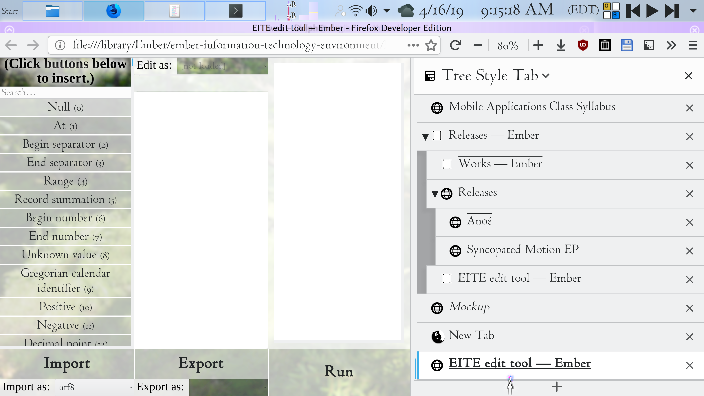
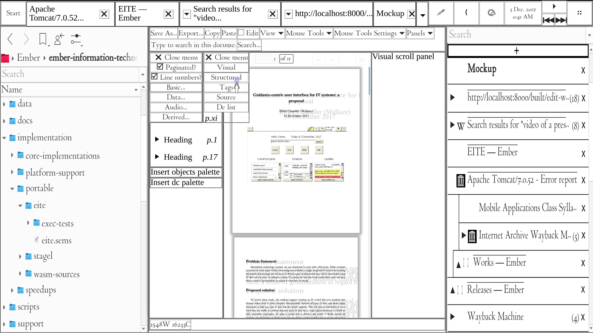
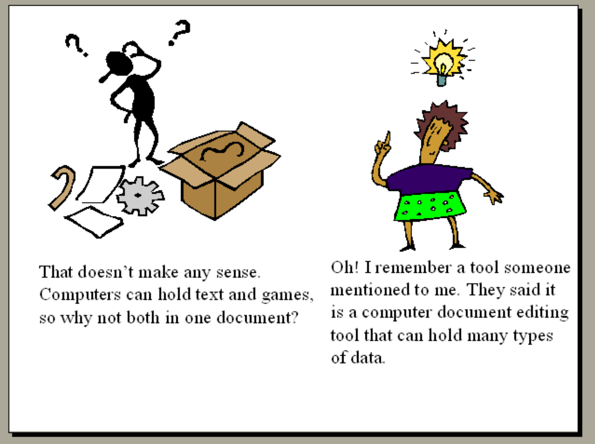
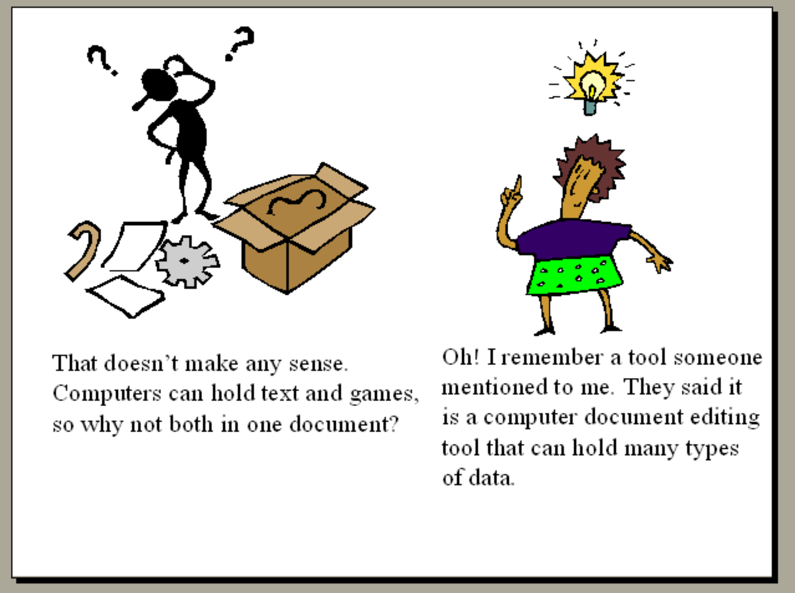

Ember
Foreword
This book represents a vision of hope for the future.
Every person should be able to carry the basic knowledge — management and governance, technology, history, culture — of the world with them, freely given and shared; an Ember of their world, carried as one's constant companion and asset. Thus, each person can be an Ember, able to use that knowledge to ignite a new community without losing the heart of the old, or to fork it to develop their own communities and societies.
This book is an effort at creating such a document: a first Ember, holding knowledge of the past and present, and principles and dreams to help create a better future. It is shared under a libre, copyleft license so that it can be shared freely, and if desired, changed to create new Embers.
This is my life's work: to collect and develop this knowledge, these hopes and ideals and visions, and give them to others. It is my attempt to reshape society to stop its oppression, harm, waste, and frustration. I don't know when or where you are reading this, but my government uses the funding levied in taxes from my income to fund violence and oppression of the most vulnerable people, instead of supporting them; and it is generally considered one of the more just governments out there. The government under which I live supports the wanton destruction of history and knowledge. It engages in this destruction actively, through the use of laws to prevent the sharing of knowledge — under the euphemistic name of "intellectual property", which is really just encouraging theft by the wealthy from the intellectual commons, an abuse accepted because the society has utterly failed to develop a reasonable strategy for supporting those who create knowledge. The government under which I live also engages in this destruction passively, through the lack of support given to archives and other efforts to preserve history and knowledge. The government under which I live is supporting industries that are actively and permanently damaging the world we live in, such as allowing the use of technologies that produce substances that are causing the world's climate to change, and granting legal protection to insufficiently tested bioengineered organisms. Horrifically, these are decisions made by a government that is at least somewhat, albeit unequally, collectively governed by its citizens: this is not a dictatorship. These problems are not unique to this government, either: some are better; many others are far worse. A dramatic shift in the structure and roles of society and government and in the perspectives of individuals — all of which are intertwined and self-reinforcing — is needed to stop these abuses, and many others. This project is my effort to help.
I give you this work as my hope.
May you take this Ember in your heart, and may it help you create, and survive, and sparkle!
Introduction
"Ember" is the current working name for a project to develop and facilitate collaboration on the principles and knowledge to build stronger communities, and give individuals greater ability to shape the society around them by sharing this knowledge. In the way the free software movement has allowed individuals to shape the computing systems they use, individuals or small communities should have the tools and knowledge to shape the rest of the infrastructure and society around them. Any person should be able to carry the basic knowledge of the society and technology available to them with them at all times in a durable, reliable, accessible format such as writing on paper, and carry a large library of additional cultural knowledge with them in a durable form accessible given the knowledge of the basic information; and each community should have a reliable copy of all knowledge.
General approach
This project should aim to systematically support the libre development and distribution as best as possible of the full set of knowledge and resources needed to support humans' standard of living, and to ensure the availability of communities managed in the long-term interest of their constituents, humanity, and the environment. The communities should attempt to provide a consistent and complete experience to the people who are part of them, without depending on support from external infrastructure, technology, or government. Relying on external support increases fragility.
This is a multifaceted project to develop a scalable environment for building an effective, just, and efficient society; consequently, it is quite broad in scope. The project has four primary areas of focus:
- A specification, encompassing:
- The principles on which the project is based
- The collective management and governance of communities
- The engineering and technology systems to provide a community with a comfortable, sustainable, and dependable lifestyle
- A library of knowledge and great cultural works
- A community managed in the manner defined by the specification
- Implementations of the knowledge assets (such as software) defined by the specification
- A supporting non-profit organization to manage the project
Specification
Specification
Challenges and associated strategies
Overview
This section documents the various real-world challenges involved in the project, and strategies for meeting those challenges.
Prerequisites
- Financial support
- Effective communication
- Team building
- Strategic planning
Roadmap
- Create a non-profit organization to manage and be responsible for the project
- Ensure that organization's financial stability (presumably through sources such as an endowment and grants)
- Transfer control of the project's assets (Web presence, etc.) to that organization
Copy of dynamic Web site content
The dynamic content of the Web site is mostly mirrored in static form [https://github.com/ethus3h/ember-web-site/tree/master/static]: in the Web site's Git repository and consequently [http://futuramerlin.com/static]: in the site as well. This process is not automated to occur regularly, and the static copy may be out of date.
Philosophy and Rationale
Goals
An Ember community should provide useful elements of survival: shelter, nutrition (including food and water), goods and supplies, medical care, services, education, and information. It would do this as its fulfilment of its objective of managing the various needs of a society, by enabling people to be effective participants in that society.
One role of an Ember community would be to provide goods. For this, it would be ideal for the community to control as much of the supply chain in use as possible. That would allow efficient provision of the goods such as to reduce cost and to ensure quality, reproducibility, sustainability, and locality. That control of the supply chain would, in an ideal scenario, extend to all stages of the process, from production of the raw materials to component production to assembly to distribution, as well as shipping at all stages of the process.
In the interest of allowing democratic self-government, there should be a universally and easily accessible facility to allow the community to vote easily, with systems in place to prevent voter suppression or intimidation.
Project structure and implementation
Ember will achieve these goals through creating individual components that each provide an integral part of the whole societal system. Implementation will probably need to be undertaken in stages.
Rationale
Human society is sometimes unpredictable in the rights and safeties it affords. Consequently, a unified institution with the aim of remedying these issues should be established outside of the realms of traditional governmental structures. Participation in Ember communities shall be dependent on agreement to specified terms, to best protect the rights of the individuals making up the community.
Licensing
Aside from sections 2 and 3 of the [http://futuramerlin.com/library]: Ember Library, all portions of the Ember project should be compliant with the Ember Minimal Freedom Requirements, and all portions of the project original to Ember should be compliant with the Ember Freedom Requirements. This is likely not yet a legally effective license, due to a lack of available legal expertise to work on it, and consequently, most of the Ember project and its [http://futuramerlin.com/ancillary]: ancillary projects are licensed under the GNU Affero GPL, version 3 (see the licensing information in each individual repository for details). The term "Information", in these requirements, refers to things such as music, software, computer typefaces, visual art, patents and inventions, specifications, schematics for equipment, etc. (By their nature, sections 2 and 3 of the library cannot practically be fully libre at present; see the "Library" section of the proposal for further information and rationale.)
These licensing requirements are present to attempt to prevent regressions in the availability and utility of the Ember project.
For given Information to be compliant with this standard, the following must be true:
- Self-contained: All information necessary for the full and complete use of the Information must also be EMFR-compliant.
- Redistributable: The Information must be legally redistributable.
- Source included: The preferred form for editing the Information must be available and EMFR-compliant; when used by Ember or when presented as EMFR-compliant, if the Information is in a form that is not the preferred form for editing it, a copy of the Information in the preferred form for editing it must always be included with the other copy.
- Notice of terms: When used by Ember or when presented as EMFR-compliant, documentation of these requirements must be provided with all copies of the Information.
- Irrevocable: The restrictions on the Information that make it EMFR-compliant must be irrevocable, at least until it falls into the public domain by legal necessity.
- Unencumbered and unencumbering: The Information may not employ any means to prevent or hinder copying or using it freely (e.g. DRM); furthermore, if the Information enables access to information that employs such means, the Information must not be complicit in facilitating those restrictions (for instance, an EMFR-compliant app that allows streaming DRM-protected content to an HDMI content-protection–enabled monitor MUST enable that content to be used freely by the user, and may not simply pass protected content through to the monitor without being able to decrypt it and enable its free use by the user; software like Firefox's content-decryption-module sandbox is thus not EMFR-compliant).
This is the same as the Ember Minimal Freedom Requirements, with the following additional restrictions:
- Requiring non-misleading attribution: Attribution to the source of the Information must be required; if the Information is a derivative work, it must be made clear that it has been modified from the source information.
- Editable: It must be legal to modify the Information, and to redistribute both modified and/or unmodified copies of the Information.
- Mandatory publication: The Information must be promptly published and made widely available publicly at the cost of distribution or less.
- Copyleft: These requirements must be required to apply to all derivative works of the Information, and must be required to apply to all information packaged with the Information (e.g., non-EFR-compliant firmware may not be provided with an EFR-compliant kernel).
- Inherited: New information created using the Information must be EFR-compliant.
- Provision as a service: When the Information is provided as a service (as in the case of software being run on a server), the Information must be made readily available to those who access the service, and documentation of these requirements must be provided with the service.
- Notice of terms: Documentation of these requirements must be provided with all copies of the Information.
- Restricted use: The Information may not itself be used as or as part of advertisement or propaganda without the agreement of its creator or creators, although it may be used as a tool for the creation of advertisement or propaganda.
- Irrevocable: The restrictions on the Information that make it EFR-compliant must be irrevocable, at least until it falls into the public domain by legal necessity.
Designs
The Ember project should develop designs for things such as clothing, tools, and housing. Any finished design provided by the project should conform to some specific traits.
- Buildable: All technologies and materials needed to build, use, and disassemble the design must also meet these design requirements, and must be fully specified in this document, with reference within the design to those other design specifications, so that every design listed here can be built, used, and disassembled without any knowledge outside of this document, beginning with only the materials available naturally.
- Deconstructable: The design should be able to be disassembled and/or reassembled without any damage or loss to the materials used.
- Materials: All materials needed to build and use a design should be:
- readily available (not rare or geographically restricted)
- in a form that can be efficiently returned to a natural state if desired at the end of their lifespan (many plastics, for instance, would fail this criterion unless an energy-efficient tool for reversing their creation is available)
- all technologies needed for their sourcing, processing, and end-of-life processing must meet these requirements
- in a form that will return to a natural material over time (the goal of this rule is to avoid materials that result in nonbiodegradeable litter like the microparticles that synthetic textiles sometimes produce; it could probably be better expressed)
- Rugged: All item designs should be long-lasting (not disposable, able to function for many years), rugged, and able to function in adverse conditions.
- Safe: All designs should be safe to build, use, disassemble, and biodegrade.
- Reliable: All designs should work predictably and reliably.
- Libre: The designs should follow the principles needed to ensure they are freely usable, drafted here under "Licensing".
- Any external dependencies of the project should be libre, so they can be forked and maintained if necessary.
- Incremental: This project should be attempted in an incremental, scalable manner, rather than creating a complex system that would need to be implemented all at once to be effective. That way, small improvements can be made without attempting the insurmountable task of improving larger components of society at once. This incremental development would also allow using the strengths of other current and future projects and systems, and collaborating with and complementing them more effectively.
Community
Community: Specification
Community
An Ember community is a group of individuals who have chosen to create an Ember community, and to live in accordance with shared principles so as to best protect individuals' rights.
Services collective
An Ember community's services collective is a not-for-profit that organizes the procurement and distribution of goods and services for its members, and perhaps those who are not its members as well. The goal of this organization would be to provide any needful things desired by its members for their lives. For instance, if a person chose to receive food through Ember, they could request that it be provided in exchange for labor. Their labor would help contribute to services requested in the future by them or other Ember members. The organization should have 24/7 available buildings staffed by Ember members from whom aid could be sought, such as the furnishing of meals, shelter, clothing, access to information, or other services, in exchange for labor. That way, if an Ember member is in trouble in a strange town, for instance, with no money, identification (beyond their own body), or other resources, they could go to the local Ember building to receive any services they desire; they could even build up credit in preparation for such an incident by working for the Ember collective prior to taking a trip, for instance, so they would have already earned any services they might want.
People that would be especially benefited by the full form of this project include individuals from marginalized groups, especially those with disabilities, mental illnesses, and the homeless, by enabling them to support themselves through a community and reducing barriers presented to them by discrimination, and by reducing the need for individuals’ dependence on the traditional monetary economy.
Engineering and Technology
Buildings
A modular building should be designed, which is able to be easily moved even when assembled, changed to add windows or other sections of the building and similar parts, and waterproof.
Information Technology
Hardware
Ember Information Technology Environment
This section of the Ember project specification introduces and documents the Ember computing environment, a project to develop a document-centric computing environment and data format. It is a proposal, design, specification, and (as of now prototype) implementation for an information technology system. The computing environment would be comprised of a centralized append-only information store, a computer operating system user interface integrated with that information store, and related specifications. The computing environment proposed here is distinct from existing technologies in that it attempts to provide superior flexibility by representing all information and documents it uses or processes (including its own software) as strings of text in a Unicode-based character encoding extended for this purpose. This is a work-in-progress draft, and everything here is subject to change and is not presently suited for implementation.
Existing information technology systems have various unnecessary limitations. In addition, many existing information technology systems are not libre software. "Libre" refers to the ethical principle of freedom of knowledge, whereby knowledge is provided with the legal protection of rights such as modification and redistribution. (For specifics on this project's goals and strategies in libre licensing, see the "Licensing" section below.) This results in wasted effort on developing redundant proprietary technologies (for instance, multiple non-interoperable word processing apps), regressions in standards of living caused by the unavailability of proprietary systems (for instance, not being able to use the features of a previous version of a word processing app the more recent versions of which have had some capabilities removed), and the incalculable loss of shared cultural heritage through inconsistent or nonexistent archival practices (and in many cases active hostility towards historical preservation, especially in the interest of short-term personal economic gain) (for instance, the loss of many historic films and television series to neglect or deliberate destruction).
These problems are not hypothetical. They are very real and ongoing problems, and are actively causing very real and ongoing harm.
While current computing hardware, and many other processes and aspects of society, have many of the same and similar problems as the problems in software that this subproject aims to address, this section only focuses on software. Other parts of the Ember project deal with computing hardware, industry and industrial designs, and social organization, so these areas are not addressed here.
Information technology systems are not connected to each other effectively. While standard protocols for some types of data interchange are available, a single integrated IT system for building documents that leverage the full array of diverse types of information that can be represented using IT does not yet exist. In addition, current IT systems do not effectively orient their users and give them a sense of groundedness in regard to what they are doing.
Many existing projects address various aspects of the issues this project addresses. None seems to cohesively aim to integrate these aspects into a comprehensive libre framework and model implementation, though, driving the need for this project. For an annotated list of related projects and inspirations to this project, see the "Related projects and inspirations" section of the bibliography at the end of this document.
This project should aim to systematically support the libre development and distribution as best as possible of an innovative information technology environment.
"Ember Information Technology Environment" is the current name of this project.
This project is a part of "Ember", a project to develop and facilitate collaboration on a specification, a library, and a model community, to serve as resources and infrastructure for innovative communities. More information about Ember is available at the Web site for the project, http://futuramerlin.com/.
The primary components comprising the project are currently unfinished, but a variety of software maintained to facilitate the development of the project is available.
A preliminary implementation of the computerized document representation format proposed herein is under development. An interpreter, several format converters, preliminary editing tool, and test suite and runner have been developed so far, as has a demonstration Web browser extension that allows authoring text in Web site text fields using the editing tool and automatically rendering sections of text in the document format embedded in Web pages. Continued work on the interpreter and implementation of the computing environment itself remain.
The main functional output of the project so far has been the successful development of three well-tested, partially completed software applications that are currently used to facilitate the further development of the project. The first of these is a portable, easy-to-write, transpiled programming language for portable rapid application prototyping being used to develop the prototype implementation. The second of these is a static Web site generator, which is used to build the project's Web site (it includes working features for theming using CSS, with some included themes, automatic blog pagination, and discography Web site generation for musicians). The third of these is a suite of tools for working with file version tracking, document archiving, and data storage and distribution. It is currently in use for storing and managing the more than eleven million files and forty version control repositories used now for this proposal's parent project, as well as the structured archiving of more than eighteen million additional documents outside of the project.
- The end goal of this work is the development of a completed, stable software environment used for developing the project, consisting of:
- Specifications
- Information technology environment software implementation
- The cloud computing infrastructure should use a decentralized, asynchronously resolving append-only data store, similar to blockchains, to ensure the preservation and longevity of data stored using it as best as possible.
- Develop, write, test, and document specifications
- Information technology information and specifications, without external (non-libre) dependencies (enough information should be included to enable full construction of all technologies starting from nature, without any existing knowledge or technology/machinery; this should be tested)
- Continue development of support software
- Develop software for information technology environment (EITE)
- Provide and implement StageL inside EITE
- UI widgets
- Implement simple document editor in EITE
- Other EITE development tasks: networking, data storage and distribution, etc.
- Add C target to StageL
- Benchmark JavaScript implementation versus C→WebAssembly, out of curiosity. WASM would require clang in the toolchain, which wouldn't be ideal until clang can be run on non-WASM EITE, but anyway...
- Support WebAssembly in EITE
- Get text rendering and raster output implemented in EITE
- Complex text rendering support
- An alternative strategy could omit implementing the technology, and only focusing on developing the specification, although that strategy would risk increasing the problems the project is intended to fix (by providing existing IT companies with the project’s technological innovations, but not having a free/libre implementation of them to prevent companies using distorted clones of the idea to further their proprietary goals and vendor lock-in).
The computing environment will consist of the following components:
- Development principles, describing the process to use for creating the computing environment
- Data format and its representations
- Specification
- Reference implementation
- Data storage system and infrastructure: mechanism for storing append-only set of records, each comprising a unique ID paired with a node document
- Software system, including:
- Client component
- Server components, including:
- Public-facing API
- Search engine
- Storage backend
Current computerized information technology systems do not live up to their potential. By developing tools to allow blending media types together, new opportunities arise in the use of information technology systems, including in structured data and the arts. An append-only decentralized archive of a community’s knowledge gives many advantages in usability, accessibility, and preservation.
- Proposing, prototyping, and developing a new form of computerized information technology system
- Basing that system on the potential of such systems, rather than mimicing the roles and restrictions of analog media
- Part of a project to develop tools and resources to make it easier to experiment with changes to society and technology in local communities
Current computerized information technology systems do not fully explore and use the potential of the medium. Many popular computerized information technology systems are too complicated to understand well (this applies to hardware, too). Many popular computerized information technology systems cannot be relied on or trusted. Knowledge is not systematically protected for historical preservation. Current structured knowledge databases are unable to hold any types of information they are wanted to, as databases are restricted to an artificial subset of documents considered to be “text”. Current systems often are not easily flexible and customizable for end users.
- Treating all media as sequences of units analogous to characters in text
- Allowing all types of media to coexist in a document, and avoiding restrictions on what can go where in a document
- Trying to ensure easy portability of software
The most practical product of this work is a transpiled programming language that can be easily converted to other languages. That way, you can write a program in one language, and have it run in many. A prototype document format interpreter is available, demonstrating unit-oriented document representation. A software library is available that provides APIs for running, importing, transforming, and exporting documents using this representation, and for data storage and Web interface access control. Documents can be exported as Unicode text, with non-Unicode contents stored using the Unicode private use area. A Web browser extension is available that can display text in Web pages represented using those Unicode extensions as the original document. A graphical tool for editing documents stored using this unit-oriented document representation is available, intended to facilitate the implementation of the next stages of the project. Documentation of the prototype is available, as is this document discussing the project.
This should serve as a demonstration of the potential of this type of information technology system. It should be extended to be usable as a practical computing environment. Unit-centric document representation allows structured data to represent information that is not supported by current database systems, and presents new opportunities for electronic media artists. As a computing environment, an append-only distributed data store should be provided, so that a community can use a network of computers running this software to share and track a shared machine-readable knowledge base of the community’s history and knowledge.
All interactions with the computing environment should be continually recorded in the knowledge base, so that any computer in the network always has its data backed up, and (by using an append-only data store) be able to return to any previous state. All interactions with a computer could be recorded in real time, so that whenever you want you could see a previous state of your computer, so that you wouldn't have to wonder exactly how you got from point A to point B when working on a project; if you go back to it years later and wonder what you were thinking, you could actually see what you did as you were creating it. The user interface of the computing environment should be implemented using the same unit-oriented document format as the rest of the system, allowing it to be customized as desired to ensure it can serve each person in the manner they prefer.
Having a community’s knowledge and history stored as structured, machine-readable data allows additional flexibility:
- It can allow people to configure how they want to see information (such as ensuring the text size is always large enough).
- It can allow people to configure what information they want to be given (for instance, filtering out documents that have not been screened for being dangerous to people with photosensitive epilepsy).
- It ensures all knowledge in the system is preserved for future history.
- It can allow people to keep their information private, rather than having it slurped up for advertising.
- It can allow people to access, copy, back up, and conduct research using the information easily, rather than knowledge being locked up in commercial databases.
Current computerized information technology systems do not live up to their full potential. So, by developing tools to allow combining media types together, new opportunities arise in the use of information technology systems, including in structured data, the arts, and an append-only decentralized archive of a community's knowledge, giving many advantages in usability, accessibility, and preservation.
Using the ebuild to install the software through Portage is suggested. Simple installation (untested) in case Portage or the ebuild is not suitable for your system: git clone --depth 1 https://github.com/ethus3h/ember-information-technology-environment; cd ember-information-technology-environment; make autodep; ./configure; make; sudo make install. curl must be available already.
If you just build EITE without installing it, the built software will be placed in the "built/" folder. The structure of that folder corresponds to the /usr/share/eite/ folder when the software is installed. This is what is meant by the "EITE installation root" in this documentation.
The goal of developing the EITE is to provide an information technology system that allows various types of data to be given a first-class role. The proposed system is a centralized but non-centralization-dependent append-only information store, a computer operating system integrated with that information store, and related specifications.
Web-based information technology companies such as Google, Amazon, and Facebook have a disproportionately large amount of power, have a disproportionately large role in how individuals are able to conduct their daily lives, and are single points of failure for a large portion of the modern lifestyle. These corporations are private institutions with little to no public oversight and control, despite having a large and visible role (perhaps even larger than any one government) in individuals’ lives. To begin to challenge that power structure, this semi-decentralized document-oriented computing platform should be developed that can integrate the abilities of traditional information technology systems into a single, cohesive system. Such a system should be free/libre software, and should be designed in such a way that it can adapt when needed to functioning as a fully decentralized, serverless system, transparently adjusting to the networking capabilities or lack thereof available to it on an ad-hoc basis. The existence of this project as a replacement would prevent single IT companies’ systems being single points of failure, and its distributed model would prevent it itself from being a single point of failure. Additionally, by being fully free/libre software, and by using a single system and data format for the full range of services, this proposal would reduce the dangers created by vendor lock-in, proprietary products, and incompatible IT systems.
An important basic principle of EITE is flexibility. It should allow the user do what they want in an elegant manner, without undue shenanigans, difficult workarounds, or unwanted assistance. It should accommodate various workflows, and be thoroughly customizable. Its default configuration should be simple and easy to use. User interfaces should abstract away technical complexities by default while remaining fully usable, while allowing access to those complexities if desired.
The system should use a single, libre, fully specified data format to store all types of information it processes, and development of the system should strive to ensure that a thorough selection of capabilities are provided out of the box using a consistent and customizable user interface, obviating the need for external apps (which often tend to be inconsistent in things such as internationalization and accessibility). The use of a single data format would allow, for instance, text, structured data, sound, and interactive media such as computer games to all be practically equivalent to each other, such that wherever one could be used, another could be used instead, ensuring thorough flexibility. This will prevent frustration of users when they are unable to combine disparate types of data into a single logical document, as would be their reasonable expectation. To make a system that is effective and useful, it should provide an interface, described here, to orient users and give them a guided workflow based on the information the IT system knows regarding them to help them get what they need to do done. (External apps should be possible to use, for instance as references to facilitate developing libre alternatives, as well as to provide historical access and allow verifying that libre alternatives are actually equivalent, but while they should be possible to use, they should never be necessary to use.)
For instance, there is no technical reason that italicized text can not be used in email subject lines, or for that matter, that an entire computer game could not be used as someone's email address. These restrictions are arbitrary and frustrating to people trying to work around them, and this computer system should resolve that by considering all types of information to be stored as simple strings of tokens, similar to current character encodings.
The data format used should provide mechanisms for storing the meanings of text, so that text in one language can be marked up in a manner that allows it to be machine-read without the ambiguities of a natural lanugage, and a facility provided for exporting that annotated text to various languages in the same manner that content can be exported to various data formats. This could make it easier to localize documents, by providing a way to tell the computer what text means and let it produce translations, without having to translate it to other languages by hand.
Developing an information technology system that integrates diverse types of data would improve efficiency and reduce frustration from unexpected, artificial limitations within computer systems for nearly any user of information technology systems. The number of personal computers was estimated to be “0.17 computers per person worldwide” in 2015 [Statista, n.d.]. 3.58 billion people are estimated to use the Internet [Statista, n.d. (b)]. This represents an enormous amount of people who use information technology systems, and it is likely that the majority of these would benefit from this proposal, especially those who work often with multimedia.
Another goal of this work is to create an information technology system that will help guide people with dementia and other mental disabilities. The WHO estimates that 47 million people have dementia. [WHO 2017] Another group of people who would likely find such tools useful is those with autism-spectrum learning disabilities. Entire worldwide population statistics for autism-spectrum disorders are not accurately known [Miller-Wilson, n.d.], but according to the WHO [WHO 2017b], estimated 1 in 160 children worldwide have autism-spectrum disorders, and according to the NIH [NIH, n.d.], estimated 1 in 68 within the United States. Finally, ordinary computer users would likely be able to benefit somewhat from the same systems, simply because while optimally designed tools may provide the greatest amount of benefit to those with challenges that affect their ability to use current systems, such tools would likely help everyone to some extent.
Because there are so many people affected by these challenges, and many others would likely benefit as well, there is a large group of people who would potentially find the proposed tools helpful. Consequently, working towards developing such a system is a valuable and important goal. The large potential benefit that could be gained from having such a system could, even if the individual increase in productivity were relatively small, have a substantial impact on the overall ability of humans to be productive and educated. In addition, a smaller group of people who are less able to use current information technology systems would probably see even larger gains in their productivity.
- Never remove a feature, capability, or option. If the development of an improved architecture or addition of new features involves scrapping existing code, reintroduce all previously existing capabilities before releasing the changes to the software.
- Make sure that all tests pass when releasing changes to the software.
- Thorough automated unit tests should be provided and kept passing.
- Code must be readable and documented.
- Code must not cause or have failing tests.
- Code should include thorough automatic test coverage.
- To keep the software in line with the specification, code must address a deviation from the current specification (bug, missing feature, etc.), and may not contain code unrelated to that.
Ordered from highest priority to lowest priority:
- Potential for data loss
- Security vulnerabilities
- Functional regressions
- Incorrect results
- Crashes, lack of accessibility/internationalization, and similar critical usability issues
- Slow code with a significant impact on usability
- Aesthetic regressions
- Minor usability issues
- Slow code with a moderate impact on usability
- Missing features
One of the fundamental elements of the information technology environment would be the creation of a decentralized information storage system, intended to provide effective and efficient information storage and retrieval (ISR). This would likely use an append-only NoSQL database to store a softly directed concept graph. Most or all knowledge can be effectively represented using two basic structures: nodes and relationships. Relationships would be specific types of nodes. Each node would correspond to a document stored as a sequence of character-like digital identifiers ("Dcs") analogous to both characters in a computer character encoding and to assembly language opcodes, allowing all types of electronic data to be stored as strings. These strings would be able to hold any structured data through the use of specific Dcs, such that when a document was added to the ISR system, it could be indexed deterministically into a separate database which would cache the structured information extracted from that document.
The nodes of a graph are the individual records that it stores. Relationships between those nodes are the edges of the graph, although it is possible that the system being developed will provide for more complex relationships, for example by allowing relationships to connect several nodes to each other in a variety of ways, although whether that proves necessary or useful remains to be seen. Metadata are an item’s traits: information such as the title of a node, or a description of it. The way the system is designed, placing all three of these types of entity into one table, allows relationships and metadata to have the attributes of nodes: for example, metadata could be attached to a relationship or another metadatum, or relationships could be specified that connect any combination of the three. There are many existing ISR systems, such as flat files and flat searching, flat-search filterable record sets, sorted records, a variety of tree and tree-like structures, tagged or labeled records, traditional tabular databases, relational databases, sparse tables, sparse matrices and entity-attribute-value models, graphs and digraphs, Boolean-queriable datasets, hierarchies, automated natural-language document acquisition and indexing, metadata-enriched natural-language document acquisition and indexing, and selective-display intelligent query results. The system proposed here would primarily leverage a graph structure augmented through the use of richly labeled nodes, providing great flexibility in the structures it can manage; in addition, the above structures could be emulated within a graph-driven environment for when they are preferred.
This will also provide effective options for implementing the wide variety of existing ISR systems outlined above as both self-hosted applications executed both in the cloud and in userspace.
There are a variety of content sources that would populate this ISR system: publicly available datasets, creative works, and other resources; resources added and/or created by individuals using the system; “dark” content such as is currently held by social networks, governments, and other organizations that do not publicly release their records; moderated content that has been reviewed and fact-checked and annotated as such by the Ember project NGO for supporting the model community; dynamically generated content; and computed content, for example, the results from a mathematical calculation or an operation on a dataset.
This ISR system should be leveraged by the NGO for several purposes. First, it can be used to record the individuals who are participants in the NGO. Through the development and application of a biometrics system, perhaps similar to that of India’s Aadhaar program, the use of names could be easily foregone, allowing for people who are mononymous, change their name frequently, have unconventional names, have no name, and so on and so forth to easily use the system, without being subjected to the usual tribulations that accompany any of the above in many modern governments. (It would also eliminate similar gender identity and other issues in receiving government services.) While instability of identification traits in individuals, either through subversion of the system or through chance, is indeed a concern, both for positive and negative identification (Sahoo, Choubisa, and Prasanna: “Multimodal Biometric Person Authentication: A Review”. 2012. In IETE Technical Review, vol. 29 issue 1, January–February 2012), hopefully a sufficiently deep set of metrics could be established to prevent this from being an issue. When an individual becomes part of the NGO, they would be enrolled in the biometric identification system, and provided a system for communication and tracking of some type. This could take several forms: the most practical and useful, probably, would be a wristwatch-like interface to cloud computing systems that would contain a GPS system and other useful electronics. The purpose of this would be the providing of emergency services: in the event of an emergency, the wearer could interact in it in a way to convey the existence and, if possible, the nature and situation of an emergency. This information would be entered automatically into the ISR system, which would provide a report of the emergency, including the person’s location, their direction and speed of travel, any known health conditions, their current health state (heart rate, blood pressure, and such). The system could automatically delegate the emergency to a nearby station of the NGO, which would act (presumably with the assistance of emergency response services) to resolve the situation.
Education and qualifications could be tracked through this system, as could taxes. For example, when a person completed testing by the organisation in a given subject, that score could be recorded in their profile in such a way that it could be used to determine what jobs they are allowed to work at. Taxation should be managed through time, so that a person would put in a certain number of hours of work selected from the jobs that need doing according to the ISR’s task record tracking system (possibly the number of hours necessary for a given amount of the organization’s services provided would be related to the level of qualification necessary for the work in question) to receive the organisation’s services in exchange. The person could choose which services to allocate their time credits to — for example, requesting food credits, requesting tickets to operas, or donating them to charity. In such a way, the taxes levied would hopefully never have to be put to a use the individual considered unethical. Inter-personal trading could also be facilitated through the ISR system. Such an information technology system to manage and facilitate work by individuals, tracking what needs to be done and what skills people have, and offering jobs to people with the relevant skills, would allow the individuals to bypass the difficult job search and application process, which uses a lot of individuals’ time and energy without producing any real value from that expenditure. Then, when a job is completed, the person who did the work would be granted credits corresponding to the work they did, which could then be exchanged for goods or services. This type of system could be implemented as a single, centralized system. However, it could also be implemented as a decentralized system.
To decentralize such a system, individual computers that make up the information technology system would have to be able to negotiate information sharing between other computers that are accessible via network. While implementing decentralization of the storage architecture, the API is in place, and once the separate OrbitDB project (https://github.com/orbitdb/orbit-db) is more stable, it looks like it would provide an effective and practical basis for an implementation of this, if its dependencies and build-system do not prove too onerous to manage. If each individual computer has the entire capability to maintain the system, then the network would be able to split and recombine as needed depending on situation.
For instance, two geographically remote implementations of this system would be able to be connected when a network connection between them was available, being able to share work assignments remotely, but if a storm or other situation disrupted the network connection, the two communities’ economies would split into separate economies and continue working independently seamlessly, and then recombine when the network connection returned. In such a system, each individual who has a computer thus has access to and control over that part of the economy. This still leaves one centralized aspect, though, which is the software controlling the economies. If it is community-maintained libre software, that problem is largely eliminated, aside from the usual problems of project governance. If it is preferred, the software could also have facilities for creating ad-hoc centralization, where one instance of the software within each group of instances accessible within a given network would adopt the role of leader. This could be decided automatically, and made fully invisible to users of the system, or through community selection with automatic selection as a fallback, which would probably be preferable so as to ensure that systems with good connectivity and uptime (such as servers in datacenters) were selected as leaders, avoiding unnecessary inefficiency and maximizing reliability.
Thorough user group and subgroup support should be provided. This would be especially useful for facilitating collaboration between individuals, such as in business use of the software.
The EITE should be capable of ad-hoc computer network negotiation to ensure effective and practical decentralized operation.
In summary, any current uses for software above the operating system level are reasonable areas to attempt development. An outline list of some is provided below. (Operating system development and hypothetical software use cases outside of exploration of the possibilities introduced by the novel information representation method may be of interest but are not priorities for this project at this time.)
There are two principle structural levels for which elements need to be described: documents and texts. A document is a complete unit such as a book or journal article, which would comprise various textual regions (note that in typesetting some items, such as database records of titles or filenames, only one textual region would be used; in the first, either a "Document Title" or a "Standard" region type would be used, depending on how the database was being queried, that is, the presentation style of the information as a title or as standard text (such as if it were being displayed in a page that contained a list of database fields), and in the second, a "Standard" region type would be used for interface display in lists (other region types might be used at other times) (note that in any use cases when it is in a "Standard" textual region, it would still have the text type Title)). A textual region is a section of content that has one semantic componency, e.g. the body of a document or the title; a document is therefore comprised of texts.
- Liberal relationship formation and node typing: A node can be assigned any other node as its type; a relationship can be from any type of node to any other type of node even if that is not how the relationship is defined (this situation could display a warning, for example).
- Authority contexts: Information should be able to be tagged with information on its authority. When used at the node level, as opposed to within document content, authority context information should be validated to ensure the utility of the available nodes (so that the authority context tagging can be used to evaluate the reliability of a given document). For instance, objective consensus, reflecting a neutral point of view, not necessarily trying to represent all points of view equally because of lack of consensus about them, versus subjective individual/organization source, representing an individual or organization's opinion, without necessarily any regard for a neutral point of view, such as in opinion writing or advertising.
A node is a document, represented as a sequence of Dcs, stored in the EITE system. A document created by an individual would presumably, when stored as a node, have additional information not managed by the individual, such as who has the right to read and edit it. Thus, the document an individual would work with would be stored as a portion of a larger document representing its corresponding node. Because the system is append-only, nodes would have revisions, representing each time it was changed. For letter-by-letter changes, produced while typing without saving, instead of saving a new revision, letter-by-letter change tracking and storage could be used, such as is used by Etherpad.
Various fully featured ways to interact with the system should be provided. For instance, a graphical interface, a command-line interface, and a UNIX-style "everything is a file" interface. (Filesystems, especially APIs exposed as filesystem entities have their own challenges and risks, such as confusing scripts that aren't designed to work with anything except plain old files, having unusual structures such as files not present in any directory, infinite directory trees resulting from hardlinks to directories, files with multiple forks, or named pipes, and if providing nodes by filename, having files and directories with the same names or directories with a data fork; these issues will need work and research to resolve well and provide good user experiences.)
A complex sequence of Dcs could be built using special-purpose input tools for constructing them. For instance, purpose-built tools could be provided for constructing a sequence of Dcs representing a mathematical equation, or a sequence of Dcs representing a given time or color.
Similarly, a special type of sequence builder could be used to build sets of values. For instance, for selecting a document to send to someone, a document set builder dialog could be provided. It would allow selecting one or more documents to send manually, or selecting one or more documents by specifying rules for their selection. Then, the set containing the chosen node or nodes (optionally, at their present revision) is saved as a node; that set node is then provided to the person one is communicating to; the same interface could be used for selecting files for working with in an app. Sets could have restrictions, such as regarding how many documents they could contain, whether they could contain complex structures (such as a directory tree), whether one document could be swapped out with another or not, or whether the set should automatically gather new nodes matching the specified rules. Sets could also be driven by search criteria (e.g. the most relevant 10 nodes for a given keyword or given Boolean search conditions, or all four nodes with type Musician and a "is member of" relationship to "The Beatles", or the rapidly changing set of nodes with type Musician and a current or past "is member of" relationship to "Yes"), or built programmatically from new or existing nodes. Sets could also hold non-node strings. (Node IDs, as with everything else, can be considered as special cases of strings.) This would allow file uploads, searches, etc. to all be driven using the same basic user interface module, which would essentially be an extension of traditional file pickers. The set node would have a Dc sequence representation, as do all nodes, so this is really a Dc sequence builder. Like anything else in EITE, by virtue of being an append-only system, a set could "time travel": a set could display its contents as they would be at any past time. Another application of the set builder could be creating a document that displayed the current top 10 tracks on the Billboard Hot 100 — a set could be created representing the top 10, and a rule could be created if desired to deal with the condition if the Hot 100 was discontinued: the set could be configured to return nothing, to return a fixed list, to return the top 10 from the final edition of the charts, et cetera. A set builder could also be used to select dynamic and non-finite groups of things, such as the set of all integers, or all strings matching a given language syntax; this ability would be similar to the lazy evaluation used frequently in functional programming.
StageL is a simple programming language for easily writing portable algorithms to be transpiled to and used by programs in other languages. It is the language used for, and was developed to be used for, the primary implementation of the [http://futuramerlin.com/index.ftm]: Ember information technology environment (EITE), and thus of the Dc-based document format used by EITE. The name "StageL" comes from calling it a "staging language" (which refers to its being a tool for developing the main EITE software, which should provide a more complete language). This project was inspired by the ugly code that resulted when I tried to write using these principles directly in JavaScript, needing a lot of easy-to-mess-up boilerplate code and awkward notation (largely because it is not strongly typed).
- Imperative language. Trivial to implement, learn, and read; extremely portable.
- Provide function calls, arrays, strings, numbers, booleans, and operators for these types with strict typing. Objects and first-class functions are out of scope for this language. (It's closer to duck-typed in practice, as e.g. in Bash there would be no distinction between string 0 and number 0.)
- Implemented as a transpiler that accepts a file as input and produces a file in the target language as output.
- Have an implementation of itself using itself, to provide testing and portability of the language.
- Have an implementation in Bash.
- Should transpile to (eventually) JavaScript, C, Java, Bash, PHP, Microsoft CIL, Lisp, x86 assembly, and Python, at least, in roughly that order of priority. (JavaScript has been completed for work on the main EITE software; C and Java should follow soon thereafter for their portability; the other languages are nice to have to cover a diverse range of development environments, and additionally, in the case of CIL/x86 assembly/Lisp, of providing interesting challenges in ensuring that the language really is easily portable due to their difference from the others.)
- Focus on simplicity and portability: it should purely be an algorithm representation format, without input/output capabilities. It is for implementing the algorithms of a program once, and having it be available in various languages. Things such as input/output and native calls should be provided as an API specification for the StageL source file: at the top of the file, it should declare all the implementation-dependent functions that it requires; these would then be provided separately by the programmer and/or by a set of functions provided with StageL for each target language. (This was loosened in practice and a standard library with some basic I/O is required.)
- All input/output to/from the language is as functions. All code must be in a function, with declared parameters, parameter types, variables needed, and return type. (The expense of the simple type system is that changing return values would break functions' API, since "out" parameters and/or pointers would not be available, but this should allow the code to be simple and readable, which is a priority for this language.)
- Output files should retain the structure and comments of the input files, thereby retaining readability as far as the target language permits.
- All behavior should be specified. Ambiguous programs should be impossible to write knowing the specification, and (as far as possible) the meaning of a program should be obvious and unambiguous without the language specification. Programs that do not match the specification exactly should be entirely rejected, rather than produce warnings or having a best guess of its meaning made.
It works satisfactorily. It's pretty portable, I think. Things aren't fully specified because it transpiles to native constructs that behave differently between target languages. This could be resolved by implementing a virtual machine or similar in each target language, but that's a pain, so this is good enough for what this is for. Low-level facilities aren't really available yet. I guess they can be added as additional builtin routines. One option might be implementing a WebAssembly VM or something that is available implemented purely in StageL, but can be accessed natively if available to be faster.
Lines are separated by 0x0A. Each line consists of printable ASCII text: a–z, 0–9, apostrophe, slash, spaces, <, >, [, ], (, ), {, and }, and any other printable ASCII characters in string literals or comments (apostrophe is not yet available in string literals). Within a line is a sequence of space-delimited words. Semantic levels are denoted by four spaces' indentation. The first word in a line is a command. Comments (started with #) and string literals can contain any printable ASCII (although string literals can't contain ' because it's used to indicate them; this could probably be fixed easily enough at some point (TODO)). Identifiers can contain ASCII text a-z A-Z and 0-9 (but 0-9 may not be the first character, and code that relies on case sensitivity or insensitivity by having ident references differ only in case or having two idents that differ only in case is a (possibly un-notified-about) error (these are not technical restrictions; they're just required in the interest of portability)).
There are a number of built-in commands in the core language, which is in core.js or whatever your output language is. There are also commands from the standard library, which is in portable.js.
- Whitespace is (usually) significant. There isn't a 1:1 correspondence between valid source files and the parsed code, though, I don't think. Indentation must be with 4 spaces.
- Unexpected byte values in code files aren't allowed and should cause the parser to die; strings or comments containing byte values other than printable ASCII are an error.
- The value of a variable before it has been set in a given block is undefined; don't access it until it has been set (and don't rely on variable hoisting). That's an error, but there isn't anything in place to detect it.
- Argument lists can contain references to any type.
- Strings are not intended to be used for data interchange; rather they're for process-internal use for making semantically clear array mappings and such — they don't have any Unicode or binary-safe support, or even full printable ASCII support (' isn't supported in strings) for that matter. An integer array representing bytes is preferred for when you need to actually keep more careful track of data.
- Routine parameter types can be generic, string, number, bool, or array. Void is not an allowed parameter type (although I'm not sure what that would actually mean).
- Routine return types can be string, number, bool, array, or void. Generic return type is not allowed, separate routines for each return type desired must be used instead.
- Routines can be composed in argument lists, but unless you close the parameter lists explicitly using
}, only one inner routine can be used per argument list; the inner routine must be the last argument. Using}or temporary variables is needed in other cases. For example:set n/foo add 2 mod 7 5sets n/foo to 4, but you can't doset n/foo add mod 7 5 2orset n/foo add mod 7 5 mod 7 5are errors, although they won't necessarily give an error (they will be interpreted as add(mod(7,5,2)) and add(mod(7,5,mod(7,5))) respectively, with the third argument to mod probably being discarded by the implementation). Instead, you can write these asset n/foo add mod 7 5 } 2orset n/foo add mod 7 5 } mod 7 5, respectively. - Some commands (e.g. new, return) can't handle routines in argument lists; this should die with an error, but no promises.
- Referencing or assigning to a variable that has not been declared is an error, but there isn't anything in place to detect it.
- Code like:
is an error, because if the if statement is not true, the function will exit without returning (basically being a void). There's nothing in place to detect this, though. This example is fromr/s/fbSwitcher n/num if eq 0 mod n/num 15 return 'Buzz'cli/tests/stagel/js/routine-fbSwitcher-return-type/in/in.stagel, which should perhaps be rewritten to not have this fault (ideally, a check for this problem would be added to the transpiler or generated code, but I can't be bothered right now). Likewise, routines with a return type but no return statement are an error without any detection. - In assignments, calls, etc. where routines can be composed, they usually have to be evaluated strictly left to right. Thus,
set n/a sub len s/b 1is an error (I don't think there is any detection for this): it will be interpreted asset(n/a, sub(len(s/b, 1)))when what is desired isset(n/a, sub(len(s/b), 1)). It should instead either use the inline-arglist-end marker}and be written asset n/a sub len s/b } 1, or be written as two statements: firstset n/a len s/b, thenset n/a sub n/a 1. - Type constraints are generally only enforced when values are returned or given as parameters (in which case they are checked by code automatically inserted into the routine called during transpilation). Thus, for instance, you can assign the wrong datatype to a variable without it showing an error, and it will only die when it gets returned or passed to another routine.
- Array literals can (probably) only be used with the
setcommand. For other things, make a temp value, assign the array literal to it, and then use the temp value in its place. - Whitespace requirements apply to lines where the entire line is a comment, too.
- Comments have to be on their own lines.
- What's wrong with this code?
The array bracket type doesn't match the content type: [ is for strings, while ( is for numbers.while lt 8 len an/res set an/res push [ 0 ] an/res set an/remainderArr anSubset an/in -5 -1 # last 4 characters
- Code like
set as/data append as/data [ s/key s/val ]
- Perhaps test conditions should have to be on the same line as the test keyword. For example,
would be an error; it should be written asif lt n/a 0if lt n/a 0instead. Previously it was intended to support splitting them onto separate lines, but it is tedious to implement, and somewhat makes the StageL code harder to read anyway. As a result, this perhaps should be an error. untilstatements don't work (search for "This doesn't work. I guess it'll just be necessary to forgo split-line untils for now, although I'm not sure split-line commands are really desirable regardless. FIXME" in the code).
r/s/fbSwitcher n/num
if eq 0 mod n/num 15
return 'FizzBuzz' # just a literal sequence of ASCII printable characters.
# Comment
if eq 0 mod n/num 5
return 'Buzz' # Comment 2
# Comment 3
if # Could also write it like this, with the condition on another line
eq 0 mod n/num 3
return 'Fizz' # Comment 4
r/s/fizzBuzz # A string is an array of ASCII printable characters.
# return-assert -n # the output should be non-empty.
new n/counter 1
until
eq n/counter 100
set n/counter add n/counter 1
new s/temp ''
set s/temp r/s/fbSwitcher n/counter
return s/temp
For loops aren't available because they add complexity to the transpiler.
- if
- conditional: bool, block
- else
- if, bool, block, (elif, bool, block)..., else, block
- elif
- if, bool, block, (elif, bool, block)...
- while
- while, bool, block
- until
- until, bool, block
- new
- new ident
- set
- set ident value
- }
- End parameter list without new line
- {
- Loop over an array. How it's used:
. This is shorthand for:new as/temp set as/temp [ 'd' 'b' 'l' 'c' 'b' 'a' ] new n/c as/temp { n/i s/elem set n/c inc n/cnew as/temp set as/temp [ 'd' 'b' 'l' 'c' 'b' 'a' ] new n/c new n/i new s/elem while lt n/i count as/temp set s/elem get as/temp n/i set n/i inc n/i set n/c inc n/c
Values are available until the end of the block they are in. Whether they propagate outside of the block is undefined. Accessing them outside the block, or before the line they are defined, is an error, but there isn't anything in place to detect it. Use routine return values to move things around.
When an error is encountered, it will produce a message somehow. Execution of the program may stop. Otherwise, behavior is undefined. For instance, in JavaScript in browser it will send a console log message. In bash, it will call "die" from ember-shared.
Routines that have type "v" are void. These are all the primitive commands that are implemented natively for each language. Other commands are included in StageR library of useful commands. Type "g" is generic, can only be used as a parameter for a routine. It indicates it can be either string, int, or bool. Type "ga", can also only be used as a parameter, is a generic array, which is either an array of ints, an array of strings, or an array of bools (an array can't contain a mixture), and all arrays passed to a routine that accepts generic-array parameters must be the same type (e.g. all int arrays). Type "gi" (generic item(s)) is like "ga" but can also be a single bool, int, or string.
Can be True or false. Can not be undefined (initialized to false).
- r/b/and n/a n/b
- Returns bool a and b
- r/b/or n/a n/b
- Returns bool a or b
- r/b/not n/a n/b
- Returns bool a not b
Can be 0, or positive integer. Can not be undefined (initialized to 0). Currently is restricted to 32-bit signed (-2,147,483,648 to 2,147,483,647), but may be increased if more are needed.
- r/n/add b/a b/b
- Returns the sum of two numbers a and b
- r/n/sub b/a b/b
- Returns the difference of two numbers a and b
- r/n/mod b/a b/b
- Returns the modulo of two numbers a and b
A sequence of characters: can be ASCII printable characters or space. No newlines or control characters, I guess. The string support isn't supposed to be very capable, just easy to implement lowest-common-denominator between target languages for making labels for stuff and whatever. For actual data, use arrays of integers.
- r/s/substring s/input n/start n/end
- Give the characters from start to end (indices as bytes (characters — no Unicode support here, sorry) into input)
- r/s/cat s/a s/b
- Concatenates a and b
- r/n/len s/input
- Gives the number of bytes of input.
These operate on str/int/bool.
A set of routines for managing arrays apply to any of the three array types (except the typed subset ones). Note that the push/append/prepend functions may not check that the type of the item being added to the array matches the array type; calling it with mismatched parameters is an error but may not be reported.
- r/a/copy gi/a gi/b
- Set a to have the contents of b.
- r/a/push ga/array gi/value
- Append the value to array. Same as r/an/append
- r/a/append ga/array gi/value
- Append the value or array of values to array.
- r/a/prepend ga/array gi/value
- Prepend the value or array of values to array.
- r/n/pop ga/array
- Get the last element of the array.
- r/n/shift ga/array
- Get the first element of the array.
- r/a(b,n,s)/a(b,n,s)Pop a(b,n,s)/array
- Return the array without its last element.
- r/a(b,n,s)/a(b,n,s)Shift a(b,n,s)/array
- Return the array without its first element.
- r/n/get ga/array n/index
- Return the value of the array at index
- r/n/count ga/array
- Return the number of elements in the array (also the maximum index; sparse arrays are not supported)
- r/v/setElement ga/array n/index gi/value
- Set the indexth element of the array (0-indexed) to value. If value is an array, it will replace the following elements to its length.
- r/b/contains ga/array g/value
- Returns "true" if the array contains the specified value.
- r/a(b,n,s)/a(b,n,s)Subset a(b,n,s)/array n/start n/end
- Return the subset of the array from start index to end.
A sequence of numbers. Starts with a ( and ends with a ). E.g. ( 5 6 ).
A sequence of bools. Starts with a < and ends with a >. E.g. < false true >.
A sequence of strings. Starts with a [ and ends with a ]. E.g. [ "foo" "bar" ].
These commands are implemented in StageL by composing the basic commands for easy portability. (Sorry, not really documented yet; look in implementation/portable/*.stagel to see what's available.)
- r/n/add n/a n/b
- Returns the sum of two numbers a and b
- r/n/sub n/a n/b
- Returns the difference of two numbers a and b
- r/n/mul n/a n/b
- Returns the multiplication of two numbers a and b
- r/n/mod n/a n/b
- Returns the modulo of two numbers a and b
- r/s/strCharAtPos s/input n/index
- Give the character at index bytes (=characters — no Unicode support here, sorry) into input
| Component | Implementation language | Description | Code location |
|---|---|---|---|
| [http://futuramerlin.com/stagel.htm]: StageL transpiler | bash | Translate .stagel files to other languages | cli/stagel-convert |
| StageL's language-specific implementations | Implemented once for each StageL target language | Implementations of routines for StageL that are not implemented in StageL itself, but are instead implemented in its target languages. | implementation/core-implementations/ |
| Portable implementation | StageL | This is the software that parses and runs documents stored in the EITE document format. It comprises a set of routines implementing the EITE document format. This is a batch of StageL-native routines that are available to the programs implemented in StageL (which are, collectively, this portable implementation). | implementation/portable/ |
| Optional speedup code | Optionally implemented for each StageL target language | Functions can be provided here that are optimized, native implementations of existing StageR functions. Since StageR is unoptimized lowest-common-denominator code to keep things simple, this can help things run faster. These should only be equivalent to already existing StageR functions, and should not provide extra features, approximate implementations (e.g. if floats were supported, don't provide a fast inverse square root implementation here that produces different results than the one it's overriding), entirely new code, or (usually) functions that duplicate existing StageL core-implementation code (instead, optimize those, unless it makes them really unwieldy). If a language implementation includes these, it should be tested sometimes without them to make sure they aren't inadvertently required. | implementation/speedups/ |
| Data files | N/A | Data files used to implement EITE. | implementation/portable/ |
| Build scripts | bash (dep. on StageL transpiler) | Build EITE (usually invoked by "make"): builds StageL libraries (StageR at implementation/portable/portable.js, and StageL's language-specific native implementations of things at implementation/core-implementations/(lang)/core.(lang)) in various languages. Also combines and copies the finished JavaScript code into web/eite.js. | support/build-scripts/ |
| EITE document testing quick-runner | For now, bash, I guess? Or maybe js and run it in node to avoid having to add new StageL target language (dep. on EITE document format implementation) | Thin wrapper around the EITE document format implementation that gets the output of a document in its state after it's finished loading, for automated testing (would ignore things that are e.g. interactive or whatever). | (TODO) |
| EITE document format tests | StageL | Test suite for EITE implementation. | web/tests.htm |
| EITE document runner | Various platforms possible. For now, HTML+JS. (dep. on EITE document format implementation) | Thin wrapper around the EITE document format implementation that runs and displays a specified document. | (TODO) |
| EITE non-native document editing tool | HTML, JavaScript (dep. on EITE document runner) | Tool for editing and running EITE-format documents before an EITE-native editing tool is available. | web/edit.htm (WIP) |
| EITE-native user interface and platform, including document editing tool, and optional servers for search, ad-hoc networking, encryption keys, and node data storage and synchronization (optionally, able to be a master server, storing all nodes in the network). | EITE | A user interface and document editing tool. This is what's shown in the mockups e.g. [http://futuramerlin.com/people/elli/writings/blogs/elliotchandlernmd442/2017/12/06/12799819e/]: here. It would be used by running it using the EITE document format implementation. Thus, it could be used as the main interface to a computer, by booting directly into it. (I probably won't get it running outside of a Web browser this semester, as that's not a big priority for me right now, and it almost certainly won't be nearly as useful as mainstream operating systems or Web desktops, but I think that such capabilities would ultimately be ideal.) | web/main.htm (WIP) |
The EITE specification indicates the various interfaces that an EITE implementation provides: APIs and tools for humans. The specific manner of implementation of these is not described here. (Partial implementations could be possible that, for instance, only provide importing and exporting (without running) documents, or that omit some supported formats, or that do not provide the tools.) The main EITE implementation software attempts to be a full implementation of this specification.
This is a work in progress and will likely change as it is developed.
The following natively implemented tools should be available in a full implementation: [http://futuramerlin.com/tool-testrunner.htm]: test runner, [http://futuramerlin.com/tool-docrunner.htm]: document runner, [http://futuramerlin.com/tool-implrunner.htm]: main EITE implementation runner, and [http://futuramerlin.com/tool-edit.htm]: simple document edit tool. They are not EITE documents; rather they are implemented for each platform, so they can be used in the course of developing and testing the EITE implementation. The also serve to some extent as sanity checks for the API functionality for a new implementation, as they would not work without the APIs available.
These APIs are implemented in public-interface.stagel.
| Routine name | Description |
|---|---|
| r/v/startEite | Start EITE, using the default startup document. Does not return while EITE is still running. |
| r/v/loadAndRun s/format s/path | Load and run the specified document. Does not return while the document is still running. |
| r/an/loadAndConvert s/inputFormat s/outputFormat s/path | Load the specified document, and return it converted to the specified outputFormat as an array of bytes. |
| r/v/runDocument an/contents | Run the provided document. Does not return while the document is still running. Takes care of events and I/O automatically. |
| r/n/runDocumentPrepare an/contents | Prepare to run the provided document. Use this followed by runDocumentGo if you want to configure execution settings before starting the document. |
| r/v/runDocumentGo n/execId | Run a document, once it's been prepared to run by calling runDocumentPrepare. |
| r/s/getExecOption n/execId s/key | Get the value of an execution option for a document. |
| r/as/getExecOptions n/execId | Get the execution options set for a document. |
| r/v/setExecOption n/execId s/key s/value | Set an execution option for a document. |
| r/an/exportDocument s/format an/contents | # Convert a document stored as an array of dcs to the specified format, and return it as an array of bytes. |
| r/an/importDocument s/format an/contents | Convert a document stored as an array of bytes in the specified format, and return it as an array of dc. |
| r/an/importAndExport s/inputFormat s/outputFormat an/contents | Convert a document stored as an array of bytes in the specified input format, and return it as an array of bytes in the specified output format. |
| r/s/getFormatImportSetting s/format s/key | Return the value of the specified import setting for the specified format. |
| r/s/getFormatExportSetting s/format s/key | Return the value of the specified export setting for the specified format. |
| r/v/setFormatImportSetting s/format s/key s/value | Set the value of the specified import setting for the specified format. |
| r/v/setFormatExportSetting s/format s/key s/value | Set the value of the specified export setting for the specified format. |
| r/v/pushFormatImportSetting s/format s/key s/value | Temporarily set the value of the specified import setting for the specified format. Call setFormatImportSetting with the value this returns when you want to put the setting back. |
| r/v/pushFormatExportSetting s/format s/key s/value | Temporarily set the value of the specified export setting for the specified format. Call setFormatExportSetting with the value this returns when you want to put the setting back. |
| r/as/getFormatImportSettings s/format | Return the import settings array for the specified format. |
| r/as/getFormatExportSettings s/format | Return the export settings array for the specified format. |
| r/v/setFormatImportSettings s/format as/settings | Replace the import settings array for the specified format. |
| r/v/setFormatExportSettings s/format as/settings | Replace the export settings array for the specified format. |
| r/an/transformDocument an/inputDocument s/transformation | Apply one of the supported document transformations to the provided document, and return the result. |
| r/an/loadStoredDocument s/format s/path | Load and return the specified document as a Dc array. |
| r/as/getDesiredEventNotifications n/execId | Return list of event types (e.g. keystrokes, mouse movement, elapsed time) that the document wants to be notified of. |
| r/an/sendEvent n/execId an/eventData | Send the provided event or events data to the specified document. |
| r/an/getDocumentFrame n/execId s/format | Return the most recently available output for the given document in the requested format. |
| r/b/runTests | Returns true if all tests pass; false otherwise. Displays a report of the tests. |
| r/b/quietRunTests | Returns true if all tests pass; false otherwise. |
The EITE should provide the following user-facing command-line scripts.
eite- This is the main interface for EITE. Synopsis:
eite [check|run|run-tests|source-to-tree|tree-to-source] (<path-to-document>|-)
The EITE provides the following additional command-line scripts that it uses internally.
eite-check- Return false if the specified source document cannot be parsed. Synopsis:
eite-check (<path-to-document>|-) eite-run- Run the specified document. Synopsis:
eite-run (<path-to-document>|-) [--graphical] eite-run-tests- Run test suite. Synopsis:
eite-run-tests eite-source-to-tree- Given a source file, print out an AST representation of the document. Synopsis:
eite-run (<path-to-document>|-) [--graphical] eite-tree-to-source- Given an AST representation of a document, print out the source file for it. Synopsis:
eite-run (<path-to-document>|-) [--graphical]
The formats that should be supported are available in data/formats.csv. Only input or output is necessary for some formats, and some formats listed are internal formats only, which do not need to be implemented for purposes of this specification. The options that should be supported for given formats are: (TODO).
Some transformations are provided that operate on already-imported documents (represented as arrays of Dcs), and return an altered array of Dcs. These share the format settings API for configuring them. The options that should be supported for given transformations are: (TODO).
The document exec options are: (TODO)
The document runner is one of the native tools included in a full EITE implementation. It has not yet been implemented. It should prompt for the path to a document to run, and load and run that document.
The edit tool is one of the native tools included in a full EITE implementation. It allows importing and exporting documents using the EITE library, running documents, and editing documents as dcBasenb (extended Unicode), ELS (not yet implemented), or a whitespace-separated series of integers.
Here is a screenshot of the edit tool for the Web implementation (found in web/edit.htm in the EITE installation root): 
The edit tool interface for the Web implementation consists of three vertical panels, and a horizontal row of buttons below the three panels. The center panel is where the editable contents of a document are shown. At the top is a dropdown menu for choosing what format to edit the document in. Below this dropdown is a label showing what Dc is currently at the cursor position. The right panel is where the document's output will be shown when it is run. The left panel is for locating and inserting Dcs into the document; clicking one will insert it into the document at the current cursor position. The three buttons in the bottom row allow importing, exporting, or running the document. The import and export buttons have dropdown menus to choose what format to import or export documents as.
Other implementations may have different user interfaces, but should offer equivalent functionality.
The EITE implementation runner is one of the native tools included in a full EITE implementation. Its purpose is to host and run an instance of the EITE implementation document (eite.sems), by providing the necessary execution environment and running the startEite routine. It does not need to provide any user interface beyond that provided by the eite.sems document.
Here is a screenshot of a very rough mockup of what this might look like: 
The test runner is one of the native tools included in a full EITE implementation. Its purpose is to load an instance of the EITE library, and run the unit tests included in the StageL build for the platform by running the "runTests" routine, displaying the outputs. It runs automatically, without the need for human intervention once it has been started. To do this, it needs to provide an output context that the runTests routine can use for displaying the test results.
Here is a screenshot of the test runner for the Web implementation (found in web/tests.htm in the EITE installation root) while running the test suite:

Develop a machine-readable language that can be used as an equivalent representation of documents represented as sequences of Dcs, for easier reading and editing by humans (using an ordinary text editor and conversion tool). It should also be able to be implemented using and transpiled into StageL.
EITE Language programs may optionally declare a non-default language profile to use: Core, Basic, and Dangerous (the default is "Standard"). Core and Basic both restrict the program to a subset of the language. The Basic language interpreter is written using the Core subset of the language, and provides useful shortcuts to use in the development of the interpreter for the Standard profile. The Default language interpreter is written using the Basic subset of the language, which will correspond to StageL. The Dangerous profile allows using language features which are probably a bad idea to use, but may be needed in some cases.
The core unit of the EITE Language is the Dc (Document Component). The defined Dcs are listed in DcData.csv. An EITE Language document is a list of Dcs, and a file is considered structurally valid if it can be interpreted as such. A Dc can have a syntactical pattern that it can require if it is to be meaningful. For example, a marker to begin a section of a document might be required to have a matching end marker. A document is only syntactically valid if the usage of each Dc contained within it conforms to the Dc's defined syntax, even if the document is otherwise structurally valid.
DcData.csv contains nine columns, each of which gives some information about a given Dc.
From left to right, the columns are: ID, Name, Combining class, Bidirectional class, Simple case mapping, Type, Script, Details, and Description.
The "ID" column specifies the number used to refer to a given Dc. Once an ID has been specified in a stable version, its meaning will not change in future versions.
The "Name" column specifies an informative name for the Dc. The names may change in future versions if the current names seem suboptimal. They should not be relied on as unique or stable identifiers. If a name is prefixed with "!", then that Dc is deprecated. Names should be unique within any given version of DcData.csv, although errors in it could compromise that (it is not currently checked by a computer).
"Combining class" column: See below.
"Bidirectional class" column: See below.
"Simple case mapping" column: This column contains the ID of the uppercase form of characters with the "Ll" type, and the ID of the lowercase form of characters with the "Lu" type.
"Type" column: See below.
The "Script" column indicates the script or other set to which the character belongs. Values needing further explanation include "Semantic", "DCE", "DCE sheets", "Noncharacters", "DCE versions", "Encapsulation", "EL Syntax", "EL Routines", and "EL Types".
The "Details" column contains various additional information about characters, as a comma-separated list.
- List entries beginning with ">" are cross-references to related Dcs. List entries beginning with "<" are decompositions.
- List entries beginning with "(" indicate the syntax (parameter type signatures) for EITE Language routines.
- List entries beginning with ":" indicate the required syntax for the given Dc, using a form similar to regular expressions:
- a bracketed list of Dcs [] indicate a set of possible Dcs
- a bracketed list of Dcs with a ^ at the beginning indicates an inversion of the set
- + indicates 1 or more of the preceding item
- a Dc ID in brackets with a colon before the closing brackets indicates any syntactically correct sequence of Dcs beginning with the enclosed Dc ID
- "~" represents the Dc the syntax of which is being defined
The remaining list entries are aliases (alternate names for the characters, for ease of look-up).
The "Description" column contains additional comments regarding the Dc.
Three columns' contents are directly inherited from the Unicode Standard: Combining class (inherits Unicode's "Canonical_Combining_Class property"), Bidirectional class (inherits Unicode's "Bidi_Class" property), and Type (inherits Unicode's "General_Category" property). The "Simple case mapping" and "Script" columns should also be inherited from Unicode in some manner, but are not at present. For characters not included in Unicode, a reasonable value is chosen in the pattern of the values used by Unicode. If there are discrepancies between this value and Unicode's value for a given character that is in both sets, this should be reported as an error in the EITE Language standard. Unicode's values should take precedence.
"Type" column values also extend the Unicode Standard's possible values with the "!Cx" category, denoting characters that do not fit neatly into Unicode's existing categories.
Inclusion of the mode indicators in documents is optional. The selected mode expresses information about the document's expected execution environment. These modes are shortcuts that set up the environment in advance so that the document does not need to contain specific code to set up these contexts. This lets the resulting documents more concise and readable.
Dcs 246 through 255 control the formatting of the ELS format version of a document.
There are seven file formats defined by this specification. Six of them (dcBasenb, ELS, ELAD, ELQ, DELQ, and SELQ) are general-use formats, while the seventh (ERD, not yet specified) is a special-purpose format with a subset of the other formats' capabilities. DcBasenb and ELS are the primary formats, while ELAD, ELQ, DELQ, and SELQ are intended as an intermediate, more-readable format, and are not intended for information interchange (they are much larger than the other formats for a given document, in general).
Implementations should be able to render a document exactly (bit-for-bit) as determined by earlier versions of the specification. A syntax should be provided to indicate the version of the specification a given Dc, region of Dcs, or document should be displayed using (exactly, not just semantically), although Dcs have not been created for this purpose yet.
There is a one-to-one correspondence within a given version of the specification and implementation between normalized dcBasenb, ELS, ELAD, ELQ, DELQ, and SELQ files (for any given document in one of those formats, there is only one way to represent it in the other formats), but not for ERD files (because ERD files can only represent a subset of EITE Language documents). That means that documents can be losslessly round-trip-converted between those six formats. However, when converting from an ELS file, if it does not have a version specified, its behavior may change due to changes in the mapping between source code and Dc IDs. Source form should be able to represent syntactically invalid documents unambiguously. Whether structurally invalid source-form documents should be able to be represented as structurally valid Dc sequences is debatable.
DcBasenb files are a specific interpretation of the private-use-area characters in Unicode text.
ELAD, ELS, ELQ, DELQ, and SELQ files are subsets of ASCII text files, with lines delimited by 0x0A (line feed). Bytes 0x00 through 0x09, 0x0B through 0x1F, and 0x7F through 0xFF (all ranges inclusive) are disallowed. Files must end with 0x0A. This may later be changed to use UTF-8.
A less strictly specified formats has an implementation available: "integerList" (.dcil), which is a list of ASCII digits representing Dcs, with each Dc followed by a space (including the last one), and no trailing newline or comments.
At the end of each format's summary (except for EMR), a simple "Hello, World!" document is given in the format.
This format uses Unicode characters for Dcs that have losslessly roundtrippable Unicode equivalents, while representing Dcs that are not mappable to Unicode as sequences of Unicode private use area characters. Note that there are multiple possible ways a given Dc or sequence of Dcs can be represented as private use area characters, so only the normalized form (the form output by the implementation) is strictly roundtrippable to Dcs, and only for a given version of the specification and implementation (incidentally, the implementation for importing them does not verify that the normalized form was used and warn otherwise, but it should).
Hello, World!EITE Language source files are a programming language–inspired representation of EITE Language documents. It is the most readable of the formats, but also (along with SELQ, which is defined in terms of it) the most technically complex.
dc:
Hello, World!
or more idiomatically (but not the exact equivalent of the others in terms of the Dcs used),
say 'Hello, World!'which would be
256 258 260 262 # . . . .
264 263 57 86 # . . H e
93 93 96 30 # l l o ,
18 72 96 99 # . W o r
93 85 19 261 # l d ! .
259 # .
in Dcs, or even more simply the say could be omitted since literals are printed by default: 'Hello, World!'.
EITE Language in ASCII documents are a list of Dcs. The Dcs mappable to the permitted ASCII characters are represented by those ASCII characters, with the exception of 0x40 "@" (Dc 1). All other Dcs are represented by "@" followed by the integer Dc ID followed by a space, such that, for instance, "@" would be represented as "@1 ".
Hello, World!A list of Dc numbers. Four Dcs are given per line, separated by spaces.
57 86 93 93
96 30 18 72
96 99 93 85
19
A variant of the EMS format for easier reading: after each line, the printable ASCII equivalent of each Dc is given following 0x202320, each separated from the next by a space. If there is no printable ASCII equivalent, or the character is a space, "." is used instead.
57 86 93 93 # H e l l
96 30 18 72 # o , . W
96 99 93 85 # o r l d
19 # !
A variant of the ELQ and ELS formats for easier reading: the ELS source version is given in a comment in the style of the DELQ format, but the number of Dcs on each line is determined by the source lines to which they correspond.
# dc:
57 86 93 93 96 96 30 18 72 96 99 93 85 19 # Hello, World!
This is a special format in the "Structured" mode used for structured record storage in EITE. It is not yet defined, but will most likely be a subset of one of the other formats.
The EITE Language uses the following main types of entity to represent information:
- Type
- Types are templates describing the structure of objects. They are known as prototypes or classes in most programming languages, depending on whether objects described by them inherit changes to the types made after the object was created. (Objects can be used as types by casting.) Type names begin with a capital letter when in source form.
- Object
- An object is an entity that conforms to a given type (an instance of that type). The most general type is object, and there is no need for an object to conform to any other type. Whether the type it inherits from is treated as a class or a prototype should be able to be specified.
- Block
- A block is a group of statements.
- Project
- A project is a single document, and if relevant, any other documents maintained as part of that document.
- Module
- A module is one or more Library-mode documents that have a package name for addressing the things they provide.
- List
- A list is an ordered list of objects.
- String
- A string is a list of Dcs. Because all Dcs can be used in strings, any data type can be cast to a string, and all data types internally are strings of Dcs.
- Routine
- A routine is a set of instructions for a computer to follow as part of the process of interpreting a document. Similar concepts are known as functions or subroutines in most programming languages, or as methods when used within objects. Routines have an associated structure that indicates what parameters may be passed to it.
- Operator
- An operator is a short notation or syntax pattern for some common routines.
- Identifier
- An identifier is a name for an object.
- Structure
- A structure is the definition of what the structure is that an entity can have, similar to type definitions or type signatures in some programming languages. A type can contain named Structures without any values for defining an interface.
- Statement
- A statement is a logical line of a document. It can be an invocation of a routine, or a declaration of an entity's structure or value.
This diagram shows conceptually how data flows at a high level in the process of running an EITE document using an interpreter (a compile-then-run system would use different data flows, but the overall effect would be equivalent). The non-bracketed elements represent programmed processes. The bracketed elements represent data structures. A circle ○ represents data storage persists for the lifetime of the document being open or being executed (not necessarily in RAM: for a long-running background task, like a periodic mail fetcher, this data could be moved to disk or the cloud if useful to free up local memory). Other data structures can be buffered/streaming FIFOs that discard input as it becomes unneccesary. The arrows represent data flows into and out of data storage or the system. This diagram assumes a Dc sequence as input; other forms of input would need a separate conversion/interpretation step for this.
External I/O: document source ──────────────╮
(as Dc sequence) │
↓
[○ Document execution state] ╮ ╭ [○ Document as Dc sequence] ←╮
↑ ↓ ↓ │
╰───── Document execution loop: ───────────────────╯
Other External I/O ← iterates over tokens (Dcs)
↓
Renderer: converts and
and writes to renderer
buffer visible document
elements
↓
⎡ Renderer buffer: holds ⎤
⎢ representation of document ⎥
⎢ in the format desired for ⎥
External I/O: render target ← ⎢ output (terminal text for ⎥
(e.g. terminal or browser) ⎢ a CLI, HTML for a browser, ⎥
⎢ bitmap for a raster ⎥
⎢ monitor or HTML Canvas, ⎥
⎢ other formats for export, ⎥
⎣ etc.) ⎦
- Getting a summary of everything going on (start / home screen kind of thing): Customizable. For example, could contain:
- A brief reminder of who/where/when/etc. I am
- What I have to do today (schedule, tasks, etc.)
- Important news (e.g. emergencies, etc.)
- A search box
- A way to easily create a journal entry, blog/microblog post, social networking status update, etc.
- A way to easily add an event to my schedule or a task to my to-do list or a note to myself (Stickies style) or a more thorough journal-y note to myself (à la this note on apps and features) (this could even include jotting down / recording / playing in musical ideas, etc.)
- A way to easily compose an IM / email / etc. or place a voice/videocall
- Messages from others (emails, IMs, voice/videomails, etc.)
- Other guided information resources (see below)
- A hierarchy of things to browse through (web-portal style)
- …
- Media consumption and browsing
- Reading and interacting with documents/apps
- Browsing a Web site
- Browsing through EITE nodes and other structured datasets/databases
- Movies
- Feature films
- Video series
- Online streaming home video (YouTube, etc.)
- …
- Music
- Albums
- Individual tracks
- Music videos
- Artist/album/tag/etc. radio
- Playlists, including shared playlists
- Scores
- …
- Games
- Interactive fiction, MUDs, MOOs, MMOs, puzzles, board game simulations, many other types of games …
- Ebooks
- Poetry
- Quotations
- Essays
- News
- Comics (manga)
- Blogs & RSS feeds
- Consuming realtime media (television, radio, livestreams, …)
- …
- Document creation and sharing
- Writing a paper
- Collaborative document editing / creation
- Composing a score
- Writing a book
- Creating a movie
- Creating a storyboard for a movie
- Writing a script
- Editing a photograph
- Creating animation
- Notes to one's self (sticky notes style)
- More thorough journal-y notes to one's self (including jotting down / recording / playing in musical ideas, etc.)
- 3D modeling and rendering
- CAD
- Diagramming
- Creating a database
- Mind mapping
- Recording and producing a song
- Diagramming structures in multiple dimensions
- Developing apps
- Designing a typeface
- Working with GIS data
- Recording a photograph or a video using a webcam, scanner, camera, …
- Recording audio using a microphone
- Working with geometric figures
- Recording music from a USB/MIDI instrument
- Blogging and microblogging
- Working with legal documents
- …
- Working with structured information (this is mostly also document creation / management)
- Managing a genealogy using Ember records
- Managing a calendar / schedule
- Managing a to-do list
- Managing a contacts directory
- Working with scientific data
- Maintaining a retail environment (online or physical)
- Managing recipes
- Managing a reading list
- Journaling
- Managing a bibliography
- Fantasy sports
- Managing and using bookmarks
- Managing financial information
- Managing personal notes, documents, projects, photographs, videos, etc.
- Managing a class
- Participating in a class
- …
- Using resources/tools
- Dictionary
- Thesaurus
- Chemical elements chart and data
- Maps, travel directions, and sky charts
- Calculator
- Using the computer as a flashlight
- Field guides / identification keys
- Instructions and how-to information
- Lessons on things
- Typing lessons
- Language learning lessons
- Musical instrument lessons
- Tutorials on using software
- …
- Support using EITE & Ember
- Nutrition information
- Support in other aspects of life (e.g. help with trouble fishing, personal motivation, nutrition, depression, etc.)
- …
- Management
- Database creation and administration (this is really “Document creation”, but also listed here)
- Network administration
- Programming
- Emulation of other computing systems (this is also media playback, of a sort)
- Working with files and directories
- Converting data from one format to another
- Compressing and/or archiving data and/or directory structures
- Imaging disks
- Encrypting, decrypting, creating checksum records for, checking against checksum records, packing with parity data, restoring from parity data…
- Running apps (this is basically just opening documents, )
- Distributed computing
- Digital forensics
- Computer security
- Malware prevention, intrusion detection, …
- Data serialization
- …
- Exchange
- Buying and selling goods
- Trading stocks and cryptocurrencies
- Purchasing and selling tickets
- Issuing and redeeming coupons
- Sending money (money-order style)
- …
- Searching
- Answers (e.g. facts, math questions)
- Finding media (e.g. news, movies, music, etc.)
- Locating documents
- …
- Guided time use and content consumption
- Notifications
- Emergencies
- Important news
- Emails
- Blog feeds
- Things I’m supposed to be doing
- Personal health warnings
- Computer status warnings (disk/memory failure, overheating, can’t connect to Ember server, running out of battery power, …)
- …
- Activity guidance
- What to do right now
- What I have on my schedule upcoming
- …
- News headlines
- Blog feeds
- Podcasts
- Top charts (popular items)
- Best charts (classics / enduring popularity items)
- Suggested recipes
- Fitness tips
- Weather information
- Stock market information
- Computer’s status (resource usage, etc.)
- Personal health
- Sports information
- Acquaintance suggestions (people one might find interesting to talk to or to get to know)
- Dating suggestions / matchmaking
- …
- Communication
- Instant messaging
- Video chat and group video chat
- Audio and video messages
- Collaborative document editing (this is “Document creation” but is related to communication)
- Social networking
- Blogging and microblogging (this is “Document creation” but is also a form of communication)
- Newsgroups
- BBSes
- File sharing
- Industrial automation (machine embroidery, etc.) (not an exact fit in the category of communication, since it’s communication with machines: perhaps closer to "management")
- Sharing/microblogging/adding as status updates URLs, photographs, music, videos, …
- Social bookmarking
- …
This section documents the results of various user research conducted for the information technology environment.
To learn about how viable and helpful this project would be, I interviewed two people to learn about their use of information technology systems and how they would be affected by the tools proposed here.
- What tasks do you frequently use information technology (IT) systems to complete? A few examples of information technology systems, for purposes of this question, are computers, telephones, portable music players, and fax machines.
- What aspects of yourself influence your use of, and experience of using, information technology systems? For example, if your job needs you to use IT systems, what is that job and what aspects of it relate to your use of IT systems? Or, if you find IT systems difficult to use because of difficulty processing complex visual stimuli, or because of physical mobility impairments.
- Also, when using information technology systems, are there any other challenges that you face?
- Imagine a computer or smart phone that, when you first start it, presents a list of recent projects you have worked on (such as documents you have had opened), and a list of upcoming projects you have told it about. Would you find a memory aid like that helpful in guiding you to the projects you are there to work on?
- For the next two questions, imagine an IT system that gives you information about current circumstances — your name, where you are, the date and year, and recent news and messages.
- Would that help you feel grounded in the present and more easily able to complete the tasks you are there to work on?
- If you or someone you know has trouble remembering that sort of state information, for instance due to Alzheimer’s disease or dementia, do you think this would be helpful in dealing with that?
- Current information technology systems are generally unable to facilitate combining information from various domains of use. For example, if you are writing a textual document, it is not really possible to include a musical composition within that document in such a way that it can still be edited when you send the document to someone else, and that it is a first-class, native feeling part of the document. For the next two questions, consider an IT system that uses a single way of storing and manipulating information for all the types of information it works with. For instance, you could work with a text document and a musical recording within a single document, using a single interface, or you could use a video as the subject of an email.
- Would you find such a system helpful?
- What are some specific situations in your use of IT systems that would benefit from that?
Thank you for participating in the interview!
Note that these responses have been lightly edited to make them clearer. The meaning of the responses is unchanged.
Interviewee 1 works as a church organist and piano teacher.
- Computer: Researching music repertoire and performance techniques for my work; learning repertoire; listening to music for work. Telephone: Business and personal contacts.
- No problems except for not always understanding the technology in a complete way and so not always being able to solve problems on my own.
- Financial restrictions in not having all the ideal components for a virtual pipe organ. Also, sometimes information not fitting on a screen correctly, or otherwise not working as it should.
- I don’t have so many projects going at once that I cant keep track of them.
-
- Perhaps if I had a condition like Alzheimer's disease, but otherwise, no. Recent news would be a distraction unless that was my field of work.
- Yes, it could be helpful. I believe.
-
- Yes, that could be helpful. It would prevent the need to make two (or possibly more) separate communications, in some cases.
- Trying to share a photo with commentary attached or a musical composition with my questions attached and also to get a critique.
- I use IT systems for many tasks:
- Music writing and recording
- Music listening
- Video watching
- Reading books
- Reading news
- Checking the weather
- Studying Spanish
- Looking up words in English and other languages
- Finding synonyms
- Making phone calls
- Texting
- Video chatting
- Keeping my appointments straight
- As an alarm clock
- As a timer
- As a stopwatch
- Tuning my guitar
- Finding information about people and businesses
- To guide my travels via GPS
- Emailing
- Research of products and subjects of interest
- Backing up information
- Storing photos
- Digitizing music and photographic slides
- Scanning books and other documents
- Finding, creating, and sharing recipes
- Journaling
- Making and publishing videos
- Publishing digital music
- Taking photos
- Opening the garage door
- Making shopping lists
- As a metronome
- To create editable documents using OCR
- To measure the level of sound
- To create animation
- To practice piano
- To recreate orchestras
- To alter photos
- My work is in music, and I use a computer and an iPhone extensively to support that work, as can be gleaned from the list above.
As long as images are relatively static, I can manage OK visually, although my eyes will get tired. When things are moving quickly, it is a challenge even when my eyes are fresh. Watching a movie with subtitles can be a challenge, for instance.
- Because I often interact with others via video chat, internet connection issues can often present challenges.
Because I use IT systems so extensively in my work, I am often challenged by the fact that my formative years did not include "thinking like a computer." In other words, using IT systems is not second nature to me.
- I think I would have to be shown how it would intersect with my workflow. I am used to using Calendar to keep my appointments straight, and I use Notes to make lists of projects when they become too numerous to hold in my "internal memory," so to speak. I am generally reluctant to learn new applications when what I am using is basically working for me, but when I am shown that it is in my best interest to do so, I overcome the reluctance.
-
- I have such an IT system. I can ask Siri for any of that information.
- I think it could be helpful, especially if someone was still in the work force, or if they still were striving to meet the challenges of living alone, or of helping to care for others.
-
- I think it would be brilliant. Helpful? Absolutely.
- Oh, goodness. I might send a recording to a client, and in the email mention specific passages about which I wanted them to comment; with such a holistic system, focusing their attention would be easy. Again, I sometimes send links to YouTube videos I have posted, and it would be great if it weren't necessary for the recipient to leave the email client in order to view and comment.
When creating text documents, I often want to incorporate photos or other materials; it is always a struggle because the applications that are best for the text aren't as nimble when managing other materials. I can absolutely see the value in being able to incorporate both video and sound files, for instance, in such documents.
Also, it would be wonderful to be able to add recorded verbal content (or even video) as a response to emails or other documents received from others. It is often easier and faster to speak impressions and complex responses to things than to write them.
These interview responses show that various aspects of the proposed information technology system would be helpful. The interviews find some parts of the project helpful and others not necessarily so for their specific goals. Consequently, to make the proposed system ideal for all users, a method should be provided to allow users to choose which of its capabilities they would like to use. That way, the interface they have is the most relevant to them personally, and thus the most helpful in solving the particular problems they face.
While these personas are based on the interview respondents, they are somewhat fictionalized.
Lara is a 37-year-old professional church organist. They make extensive use of computers to manage business communications, and to simulate an organ for practice at home. Their work often requires communicating with their employer regarding music and business. To discuss music with their employer, it is often not practical to use a computer, and it is necessary to meet in person, due to the limitation of current information technology systems. If computers could provide tools for easily sharing and collaborating on scores and recorded performances of those scores, Lara’s job would be made easier by reducing travel time and the requirement of meeting in person to work on things that do not actually need an in-person meeting.
Joseph is a 40-year-old film teacher at a large public university. They use non-linear editing software in computers to edit films, and to demonstrate film editing in class to their students, as well as to work on separate projects for independent clients. Because the people they work for often have a hard time communicating what they want in a project, several iterations of work and feedback are needed before a finished product is delivered. Consequently, Joseph would be better able to communicate with students and clients if they could work with film in the way their non-linear editing software allows, but collaboratively online with the clients and students, like cloud-based collaborative word processors allow. If there were a single editing tool for text and films, the same collaboration abilities from one medium would be available in others, making Joseph’s job a lot easier and allowing more efficient communication between Joseph and their clients.
To test the viability of this project, I would suggest developing a functional instance of it, and presenting it to a range of users who work with various challenges to using information technology systems. For testing the general viability of the project, it would not be necessary to fully implement all the features that would be needed to make it competitive with other information technology systems; rather, it would only be needed to implement a representative subset of capabilities that would allow the users to explore the general interface and the system’s basic interaction structure. To gather data on challenges that users might encounter in using the system, the testers should be presented with a task to complete using the system, and asked to give commentary on their experience of the tool, and any frustration they encounter during the process, while they work on completing the assigned task. An article from the Nielsen Norman Group states that “A scripted study of product usage is done in order to focus the insights on specific usage aspects, such as on a newly redesigned flow.” [Rohrer, 2014] Consequently, that seems like the correct user testing strategy for determining the viability of this proposal, and finding roadblocks in its usability.
I have seen and attempted to use two versions of this tool. The earlier version worked more completely for testing purposes, and from that I got a clear idea of how the tool might be useful, both in general, and for me personally.
It would be helpful to have a succinct description of the various elements and their relationships, as the layout does not make that immediately clear. For instance, the left-to-right orientation of the tabs at the bottom of the page at first suggested to me that perhaps each of the three would be used in any one application, whereas their use is not sequential.
It seems as though an unnecessary amount of space is allowed for the “Click to Insert” list, both vertically and horizontally. The list itself is not in an obvious order, and so locating a desired value takes more time than seems ideal. A search feature of this list might make it more navigable.
Having the dropdown menus perhaps within the main buttons that they modify would help me visually.
When this tool is ready for use, I would find it useful on my website for displaying musical excerpts within the context of textual analysis of musical compositions. Likewise, on my YouTube channel, it will be useful for displaying the opening measures of music for multi-movement works, as an aid to navigation within a video.
I would also find it useful to create custom buttons for my online store.
I might also use this tool when collaborating with other musicians and writers for instant messaging musical ideas, especially when editing or suggesting changes for performance.
And it will be great to have the option of displaying mere italics in Messages on my iPhone!
 [http://futuramerlin.com/image-002.png]: 
[http://futuramerlin.com/image-003.png]:
[http://futuramerlin.com/image-002.png]: 
[http://futuramerlin.com/image-003.png]: 
| Platform | Folder name | Notes |
|---|---|---|
| Web (JavaScript for current Firefox) | web | This is the main implementation available so far. It is incomplete, but more complete than any other. It is quite slow because most StageL routine calls currently are treated as JavaScript functions declared with async and called with await, which requires creating a new Promise object for every call. |
| Firefox extension | edit-webextension | A Firefox extension is available that wraps the Web implementation's edit tool and allows loading text from Web pages into the edit tool, and editing the contents of text pages using the edit tool. As only the edit tool is available, this is not a full EITE implementation for this platform; access to the other elements needs to be provided as well. To install the Firefox extension, add it to Firefox using about:debugging (it will only stay installed while Firefox stays open). To use it, select some text to view (or place the cursor in a text-field to edit), then click the toolbar button. The text will be made available in the pop-up edit tool. To put the edited text back into a text-field, click the Done button in the lower right corner. |
| C | (none yet)A bit of work has been done to add C as a StageL transpilation target, which is the first step in porting EITE to a new platform. | |
| WebAssembly from C | (none yet) | This is an eventual goal of the C implementation to allow it to run faster than JavaScript. |
Ad-hoc computer network negotiation is an emerging technology that holds significant promise for facilitating access to information and communication services in situations where traditional centralized Internet connectivity is limited or unavailable, such as in rural areas, during natural disasters, in war zones, and in other situations where traditional centralized Internet connectivity is limited or unavailable. The premise of the technology is to find ways to allow electronic equipment to communicate and establish connections to one another without depending on a central authority or centrally maintained resources such as an Internet service provider, commercially operated cables, or a name authority service. The technology allows electronic equipment to communicate and establish connections to one another without depending on a central authority or centrally maintained resources. There are some technical barriers to achieving the full potential of this technology, but various developments are leading towards its more widespread adoption.
Research into ad-hoc computer network negotiation is ongoing, and implementing this widely, effectively, and practically is a difficult problem. In an ad-hoc computer network, individuals’ privately owned, portable equipment could perform all the necessary routing to establish a connection to any other node of the network.
There are several pieces that must come together to effect such a technology.
Consensus upon a standardized protocol for wirelessly establishing a decentralized network has not yet been fully established. Getting this consensus is largely a social and usage-dependent problem (the “network effect” creates something of a chicken-and-egg problem hindering the establishment of this). On the other hand, communication protocols to enable networking is a solved problem: the protocols which underlie Internet communication, UDP, TCP, and IP, are distributed already, which is what allows intranets and other independent, non-Internet-connected networks to communicate in an Internet-like fashion. The protocols are the same, but the independent networks are not connected to the specific instances of centralized trust systems that are a defining part of the Internet.
Because fully distributed systems are inherently somewhat limited in their capabilities, due to the lack of a common trust system, this is not a technology that would entirely decentralize the Internet. Rather, it would provide a means for the system to continue operating in the event of losses of centralized service, and it would simplify replacing those few services which by nature must be centralized if an independent, separate network chose to implement them (a distributed centralization, in a sense, as it enables the centralized parts to be forked or replaced and to have their roles filled by equivalent but separate instances).
One missing part of the technology is integrated relays for connectivity: if one piece of equipment can see another, and that one can in turn connect to the public Internet, there is no standardized protocol to enable the latter to route traffic on behalf of the former, and most common equipment does not provide the hardware necessary for such a facility. A protocol with a similar purpose has been implemented by ZigBee-brand communication hardware, which provides communication facilities for Internet of Things equipment, but it has a different purpose; even so it demonstrates the feasibility of the concept.
A technology known as content-addressed storage systems enables the unambiguous identification of, and thereby discussion of, information, without the need to quote it in its entirety: whereas traditional citation formats (e.g. an author’s name and a title, or a Web URL) do not include enough information to verify that the cited document being viewed by a reader is the same as the document viewed by the author, by including a cryptographic hash, the content can be identified precisely. Brewster Kahle, quoting Peter Lyman, writes: “Now we can add something: ‘Content addressibility means that knowledge has a name.’” This is the system used by the Git distributed version control system, and it allows validation of the accuracy of a copy of a document or set of documents, and thereby validation of the authenticity of them as well through the use of cryptographic signatures.

The ability to locate and establish a connection to a specific network node given only its name and a connection to other nodes in the network, without centralization being needed, is demonstrated by distributed hash trackers (DHT). DHT is a content-addressed storage system using which, given a network connection, can return — given the cryptographic hash of desired information — the address of a computer containing the information corresponding to that hash, without any centralized authority. Similarly, an experimental system called Namecoin attempts to implement a decentralized alternative to the Internet’s Domain Name System using a similar technique.
As with the Internet, verification of the identity of the connection thereby established can be accomplished using public-key cryptography, given an existing centralized public key infrastructure (PKI).
Public key cryptography is a technology allowing messages to be sent securely to a person without first having a secure communication channel to exchange secret cryptographic keys. Simon Singh summarized the challenge posed by key sharing between geographically separated parties in traditional cryptography in The Code Book: “If two parties wanted to communicate securely, they had to rely on a third party to deliver the key, and this became the weakest link in the chain of security.” This challenge was overcome by developments in cryptography in the 1970s, allowing a public key infrastructure to be developed for the Internet. The PKI is one of the aspects of the Internet that cannot be effectively decentralized, due to the challenge of knowing whether a public key belongs to the network node it is purported to without any source of trusted information transfer from which to bootstrap trust of the given node.
These other implementations show that many of the hard problems that obstruct and have historically prevented developing ad-hoc computer network negotiation have already been partially or fully solved by other technologies. This indicates that effective development and adoption of this technology is possible.
The primary challenge remaining is not technical, but socioeconomic: an existing base of electronic equipment using a common protocol for distributed network routing is needed for any one piece of equipment with this capability to show substantial benefit to its owner, and individuals are unlikely to invest in the additional cost of the equipment necessary for this capability without knowing that they will be able to use it. This chicken-and-egg problem can be solved, however, in several means.
The most likely solution is that one or more large equipment manufacturers will see the potential benefit of the technology and implement it in their products despite the additional cost. If it is provided and made available with new equipment when it is purchased, its benefits would be felt at least in part by consumers, driving other manufacturers to adopt it. Another possible solution for this issue is that governments, businesses, nonprofits, or other organizations will develop and produce equipment implementing this technology and use it for their work, and that this would provide the seed needed for its adoption.
In any regard, this technology has huge potential benefits, because of the access to information it can provide: this facilitates, makes more effective, and democratizes access to emergency response and safety, business work in areas without established infrastructure, personal access to education and communication technologies, military operations, and the many other benefits afforded by access to the Internet.
Henry Jenkins's article "Eight Traits of the New Media Landscape" (http://nmdprojects.net/teaching_resources/jenkins_eight_traits_of_new_media.pdf) provides eight traits that its author observes in the prominent currently emerging new media. This section of the proposal evaluates this project's expression of this set of traits.
The first of these traits is innovation. This project proposal is arguably merely an extension and refinement of existing systems, and so may not be considered true innovation, depending on perspective. Even in that case, however, because those existing systems are themselves innovative, this project remains a work within new media, even if it is not itself a new medium.
The second trait is convergence. This proposal is highly convergent, being a broadly scoped project to innovate across a wide range of technology applications. It is intended to inherit the capabilities of existing computers, which are used for text, sound, image, video, and interactive media, among others.
The third defining trait is everyday presence. As a project to develop a unified system providing all necessary technology infrastructure, if it is successfully completed and used to its envisioned potential, it would be able to serve as the framework for people's everyday lives. When only available in partial form, those portions of it can be used in everyday settings as well (e.g. large chunks of my classwork and other data I rely on and use on an everyday basis (personal projects, music library, email, etc.) are stored and managed using software developed in the course of developing this project).
The fourth trait is appropriation. This proposed project ideally will be highly appropriative, because so much work has already been done. It would in all probability be hugely wasteful and impractical to attempt to build everything from scratch, rather than to leverage existing systems (even if only practical through inspiration!) and merely work to fill gaps and integrate the various existing technologies well. That said, reliance on proprietary or externally managed technologies should be eliminated as soon as practical, with all elements of the project and its dependencies being fully libre, because proprietary, non-maintainable, and trade-dependent systems are brittle and are a huge threat to the ability of human society to maintain its standards of living over time. Any external dependencies of the project should be libre, so they can be forked and maintained if necessary.
The fifth trait is networkedness. As a design goal for this project, networking should be provided when available, but never mandatory. Systems that depend entirely on networking are, echoing the discussion of the fourth point, brittle. A cloud computing–backed virtual digital assistant, for instance, is thoroughly useless in the event of networking being unavailable. Once constructed, the best tools would be fully usable in a vacuum.
The sixth trait is being global. The proposed project is intended to be able to be geographically dispersed.
The seventh trait is generational. Whether an age gap will affect this project is hard to predict. If it does, it should only be by the choice of individuals, rather than by inaccessibility or prejudice: if people who are a different age than the majority involved in the project, those people should be provided any necessary accommodations to the fullest extent possible (medical care for the elderly, education for the young, and so on). This project should not engage in discrimination based on age, although it could only serve adults until a sufficient child protection framework is in place (e.g. I think Google doesn't allow kids to use it, so this presumably shouldn't either).
The eighth trait is inequality. Unfortunately, this likely may affect the project initially, particularly due to economic barriers to access to information technology systems. Working to reduce undesired inequality as much as possible should be a design goal of the project, while promoting diversity and freedom.
What has been developed so far, practically speaking, is simply a technology demo and beginning of an implementation of a tool with larger scope. Consequently, it is rather limited in its practical utility, making it not suitable for a general audience, and mainly useful as a tool for demonstrating some of the principles used in this project, and as a core starting-point for the implementation of a more substantial and practically useful set of capabilities. StageL and the StageL-implemented library developed so far provide a solid technological foundation for further implementation of this project, and have practical applications outside of it as well.
- [WHO 2017] WHO. “10 facts on dementia”. April, 2017. http://www.who.int/features/factfiles/dementia/en/
- [NIH, n.d.] NIH. “How many people are affected by autism?”. https://www.nichd.nih.gov/health/topics/autism/conditioninfo/Pages/at-risk.aspx#f1
- [WHO 2017b] WHO. “Autism spectrum disorders”. April, 2017. http://www.who.int/mediacentre/factsheets/autism-spectrum-disorders/en/
- [Miller-Wilson, n.d.] Miller-Wilson, Kate. “How Many People Are Affected by Autism Worldwide?”. http://autism.lovetoknow.com/what-is-autism/how-many-people-are-affected-by-autism-worldwide
- [Statista, n.d.] Statista. “Global PC penetration per capita from 2000 to 2015 (in percent)”. https://www.statista.com/statistics/203677/global-pc-penetration-per-capita-since-2000/
- [Statista, n.d. (b)] Statista. “Number of internet users worldwide from 2005 to 2017 (in millions)”. https://www.statista.com/statistics/273018/number-of-internet-users-worldwide/
- [Rohrer, 2014] Rohrer, Christian. “When to Use Which User-Experience Research Methods”. https://www.nngroup.com/articles/which-ux-research-methods/
- AlBlue. “Git Tip of the Week: Objects and Packfiles”. http://alblue.bandlem.com/2011/09/git-tip-of-week-objects-and-packfiles.html
- Diffie, Whitfield, and Martin Hellman. “New directions in cryptography”, in IEEE Transactions on Information Theory (Vol. 22, issue 6, Nov. 1976, pp. 644–654). DOI: 10.1109/TIT.1976.1055638
- Git manual, section 10.4: “Git Internals - Packfiles”
- Kahle, Brewster. “Locking the Web Open: A Call for a Distributed Web”. http://brewster.kahle.org/2015/08/11/locking-the-web-open-a-call-for-a-distributed-web-2/
- Kahle, Brewster. “Content Addressing is Magic”. http://brewster.kahle.org/2016/12/18/content-addressing-is-magic/
- Singh, Simon. The Code Book. ISBN: 9780385730624
- Wikipedia. “Mobile ad hoc network”; “Martin Hellman”; “Mesh network”; “Network topology”; “Public-key cryptography”; “Wireless ad hoc network”
- Brewster Kahle portrait: Sebastiaan ter Burg, 2015 March 23. Licensed under the Creative Commons Attribution 2.0 Generic license: https://creativecommons.org/licenses/by/2.0/deed
- Whitfield Diffie and Martin Hellman portrait: Martin Hellman, Mary Holzer, Matt Crypto, Phr~commonswiki, and .:Ajvol:., 2006 July 21. Licensed under the Creative Commons Attribution-Share Alike 3.0 Unported license: https://creativecommons.org/licenses/by-sa/3.0/deed
Library
Ember Library
Library Section 1: Basic knowledge, to be included in the text of this specification
This section of the library will require research and writing. It should consist of many short sections, each covering a topic. Each of these sections should list all other sections that must be understood as prerequisites for understanding it; the dependency tree of every section should culminate in a single section that gives a basic understanding of the dominant language of the reference (probably English, for the forseeable future), so that by translating that one section into another language, every other concept in the reference can be understood by reading its section and its section's prerequisites.
Library Section 2: Great cultural works, to be included as digital data as part of this specification
Using the Web environment
This section of the library includes a Web environment as a Vagrant appliance. (For more information on installing and using Vagrant, visit [https://docs.vagrantup.com/]: the Vagrant Documentation Web site or reference the book Vagrant: Up and Running (Mitchell Hashimoto, 2013). When using the Vagrant appliance, it may be advisable to disconnect the media library’s storage medium before running vagrant destroy, because if you are running Vagrant as a user with write permission to the folder, it may follow the symlink and erase it. This seems to possibly be a bug in Vagrant; this may be related to [https://github.com/MSOpenTech/vagrant-azure/issues/30]: this issue.
To start using the Web environment, cd to the “Meta/Web environment” folder. If there is not a Vagrantfile in the folder (there should be), run:
vagrant init https://archive.org/download/virtualbox_201501/virtualbox.boxand update the Vagrantfile as desired. If there is already a Vagrantfile, continue to the next step: run vagrant up.
Library Section 3: The data held by the Ember cloud infrastructure
This section of the library will presumably be too much information to be included in the Ember specification, although future information storage technology advances may render that less of an issue.
Ember Library: Contents of section 1
Base section
This section should have no prerequisites. It should contain a summary of the basics of English in many languages to allow the other sections to be understood.
Studying
It is important to study. To study effectively is challenging.
How to Study
Mathematics
Physical sciences
Chemistry
History
1900s
In 1969, the Apollo 11 carried astronauts Neil Armstrong and Buzz Aldrin into space, who then landed on the moon.
Ember Library: Index to section 2
Bibliography
These are references for the project in general. Other sections may contain their own references subsections.
Related projects and inspirations
- The Internet Archive (https://archive.org/) is working to preserve and provide access to all knowledge. They also have been working to innovate in other areas, such as by encouraging the development of Distributed Web technology, affordable housing, and an alternative credit union.
- The GNU (https://www.gnu.org/) and
- KDE (https://www.kde.org/) communities have produced a large number of successful free/libre/open-source software packages, which are already in use to facilitate development of this project.
- The Wikimedia movement (https://www.wikimedia.org/) has produced a wide range of libre-licensed educational information, including the structured knowledge database Wikidata. The knowledge the Wikimedia projects has created is similar in some ways to some aspects of this project, and would be useful to use in developing this project.
- MusicBrainz (https://musicbrainz.org/) is a libre-licensed structured database of music and musicians. It is the original inspiration for the structured data aspects of the information technology environment for the Ember project (EITE).
- Apache Wave (http://incubator.apache.org/projects/wave.html) partially inspired and influenced the communications approach for EITE (mixed-media, everything-is-a-document/everything-is-a-string, collaborative networking).
- BabelStone (http://babelstone.co.uk/) has many articles discussing challenges in using various writing systems in information technology systems. These articles influenced my interest in the availability of tools with better typography capabilities.
- ArchiveTeam (https://www.archiveteam.org/; http://fileformats.archiveteam.org/) works to preserve documents that were stored using the Internet and cloud services, and has articles and information about the massive losses of history and knowledge that have coincided with the use of these technologies. Frustration with these issues inspired the use of append-only storage as a core design parameter of EITE.
- Free Software Foundation (https://www.fsf.org/) promotes principles of freedom as used in and by this project.
- https://en.wikipedia.org/wiki/Arcology
- https://en.wikipedia.org/wiki/Arcosanti
- https://en.wikipedia.org/wiki/Autarky
- https://en.wikipedia.org/wiki/Biosphere_2
- https://en.wikipedia.org/wiki/Sustainable_city
- https://github.com/orbitdb/orbit-db
Evidence of various problems this project aims to remedy
- Digital Amnesia (2014 film) (https://archive.org/download/DigitalAmnesiaDocumentary/DigitalAmnesiaDocumentary.HD.mp4) is an informative and accessible introduction to a few of the immense modern losses of and threats to historical knowledge.
- Madge, Robert. "GDPR: data portability is a false promise" (https://medium.com/mydata/gdpr-data-portability-is-a-false-promise-af460d35a629). 2017 July 4, in MyData.: This article discusses how corporations, when charged with preserving individuals' electronic information, cannot be relied upon to make it easy to transfer to other information technology environments; even if the data can be exported, which is rarely available as a lossless option, it cannot necessarily be transferred to other services due to the lack of standardization. At a minimum, lossless information exporting should be available, with documentation of the format in which it is exported. Google Drive, for instance, does not provide any lossless, documented, supported export format. They offer some supported and documented formats, but they are not lossless (particularly significant is the absence of export of document revision history, despite that history being stored and exposed via the user interface). Some success has been reported with retrieving their native format, but it is not documented, supported, or easily accessible (https://webapps.stackexchange.com/q/45562; http://features.jsomers.net/how-i-reverse-engineered-google-docs/).
- "National Museum of Brazil fire" (https://en.wikipedia.org/wiki/National_Museum_of_Brazil_fire). In Wikipedia. This tragedy exemplifies how organizational apathy to cultural preservation can cause devastating losses.
- Browne, Malachy. "YouTube Removes Videos Showing Atrocities in Syria" (https://web.archive.org/web/20171004135730/https://www.nytimes.com/2017/08/22/world/middleeast/syria-youtube-videos-isis.html). 2017 Aug. 22, in The New York Times. As corporate-mediated platforms become primary communications media with increasing reliance on them, the effects of using a privately managed platform without the traditional legal protections of press freedom become increasingly pronounced.
- ArchiveTeam. "A Million Ways to Die on the Web" (https://www.archiveteam.org/index.php?title=A_Million_Ways_to_Die_on_the_Web). This article discusses some of the threats to the preservation of Web-based media.
- The practice of "wiping" (https://en.wikipedia.org/wiki/Wiping; https://en.wikipedia.org/wiki/Doctor_Who_missing_episodes) historic broadcast media (radio and television) shows is illustrative of popular attitudes towards historical preservation: when value is not recognized at a given moment, things are wantonly neglected or destroyed without regard for what value they may hold in the future. Similarly, many films are lost, especially those that were stored using fragile and flammable nitrocellulose film, in the absence of comprehensive systems in place to ensure their preservation (https://en.wikipedia.org/wiki/Film_preservation; https://en.wikipedia.org/wiki/Lost_film; https://en.wikipedia.org/wiki/Nitrocellulose#Film).
- "Slack's bait and switch", in Opkode (https://opkode.com/blog/slacks-bait-and-switch/), as well as [https://news.ycombinator.com/item?id=16567009]: this discussion in response to it, and especially [https://news.ycombinator.com/item?id=16569232]: this comment; also [https://medium.freecodecamp.org/so-yeah-we-tried-slack-and-we-deeply-regretted-it-391bcc714c81]: this article, and [https://get.slack.help/hc/en-us/articles/201658943]: this page, [https://get.slack.help/hc/en-us/articles/115002422943-Message-and-storage-limits-on-the-Free-plan]: this page, and [https://get.slack.help/hc/en-us/articles/204897248-guide-to-slack-data-exports]: this other page from Slack themselves. The popular Slack messaging app is designed to capture its users' data, without allowing it to be easily exported: a Slack user cannot export (or even view) all the data they have access to. This prevents people from practically preserving their data stored using Slack. Their business model relies on capturing users' data, and holding it hostage until organizations need it enough to pay them for it.
- Snapchat (https://en.wikipedia.org/wiki/Snapchat), like Slack, is a company that predicates its entire business model on the wanton destruction of history: it provides a communications tool that is marketed upon the premise that messages sent with it are forgotten. It is unconscionable that the attitude even exists and found acceptable, never mind that it is widespread.
- The Adobe Illustrator vector drawing program doesn't have a smudge brush, although Adobe Photoshop does. There isn't a technical barrier to this (a smudge brush could be implemented by having a final pass over the rasterized artwork applying the equivalent Photoshop transformation), but because a smudge brush is a raster-centric concept, it is not provided even though it would be useful.